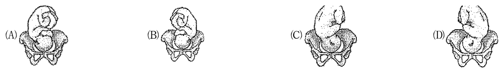

開卷有益 ／
護理師 ／ 產兒科護理學 ／ 103 年第 2 次103 年第 2 次護理師產兒科護理學試題與答案
這一頁是民國 103 年第 2 次護理師產兒科護理學的整份歷屆試題，共 80 題，題目與標準答案出自考選部「國家考試試題及測驗式試題答案」開放資料，其中 80 題附有詳解。以下逐題列出題幹、選項與答案；要計時作答或記錄成績，請用線上練習。
考選部原始場次代碼：103100
線上作答這一科 →
全部 80 題
第 1 題
有關我國當前婦女健康政策與婦嬰照護理念的敘述，下列何者正確？
（A） 縮減產後住院天數，使產婦與其新生兒能儘早出院以避免醫療浪費（B） 因應崇尚自然的概念，鼓勵居家生產，減少醫療化（C） 將生產主導權重新歸還產婦及其家庭成員（D） 鼓勵將待產室、分娩室與產後恢復室三單位分開，避免同處一室帶給產婦生產經驗混淆答案：（C）
詳解與考點 正解：題眼在「當前婦女健康政策與婦嬰照護理念」——判準是以婦女為中心、尊重知情選擇並讓家庭共同參與生產決策。將生產主導權重新歸還產婦及其家庭，符合人性化與家庭中心照護，故選 C。
A：縮短住院日數可能是醫療利用的議題，但不能以避免浪費取代產婦與新生兒的個別安全評估，故非答案。
B：尊重自然生產不等於一概鼓勵居家生產；照護安排仍須依孕產風險、緊急轉送與資源評估，故非答案。
D：待產、分娩與產後恢復整合於同一照護空間，可減少搬動並維持家庭陪伴；刻意分開不符現代家庭中心理念，故非答案。
本題考點：婦女中心照護（woman-centered care）尊重自主決策；家庭中心照護（family-centered care）重視家屬參與；人性化生產（humanized childbirth）兼顧安全、尊嚴與個別需求。
第 2 題
隨著妊娠週數的變化，孕婦小心的避開擁擠人群、保護腹部，此為何種現象？
（A） 身體界限（B） 身體心像（C） 身體覺察（D） 身體調適答案：（A）
詳解與考點 正解：題眼在「避開擁擠人群、保護腹部」——孕婦因腹部隆起改變自身與外界的距離需求，會更警覺他人是否接近或碰撞腹部。這是在調整個人可接受的身體周圍空間，屬於身體界限，故選 A。
B：身體心像是個人對自己身體外觀、功能與吸引力的主觀感受；題幹著重避開他人碰撞，不是對外觀的評價，故非答案。
C：身體覺察是察覺自身生理感受與身體變化；雖然孕婦會感受到腹部變化，但本題行為重點是維持與他人的空間距離，故非答案。
D：身體調適泛指適應妊娠造成的身心改變。這是最強誘答——保護腹部確實是一種適應行為，但題幹特別描述「避開擁擠人群」的空間範圍，應以身體界限判定。
本題考點：身體界限（body boundaries）是個人身體與他人接近時的可接受範圍；身體心像（body image）關乎外觀與自我感受；妊娠適應（maternal adaptation）會改變空間與安全需求。
第 3 題
陳女士第一胎入院待產，對於護理師執行任何治療時，主動提出問題，臉上表情愉快，陳女士正處 於產程何階段？
（A） 潛伏期（B） 活動期（C） 轉換期（D） 第二產程答案：（A）
詳解與考點 正解：初產婦待產時仍能愉快地主動提問、願意了解每項治療，表示疼痛與焦慮尚能控制，且注意力仍可放在互動與資訊上；這符合第一產程潛伏期的常見表現，故選 A。
B：活動期宮縮通常更規律、強度增加，產婦常較專注於因應宮縮，能輕鬆主動詢問的情形相對較少，故非答案。
C：轉換期接近子宮頸全開，常見焦慮、易怒、疲憊或難以集中，與題幹愉快、主動提問不符。
D：第二產程以子宮頸全開後的胎兒娩出為主，產婦多需配合用力與分娩指導，不是本題所描寫的早期互動狀態。這是最強誘答，分辨關鍵在於第二產程看的是已全開與推擠，不只看是否正在待產。
本題考點：第一產程潛伏期（latent phase）——產婦通常仍可溝通並接受衛教；產程辨識（labor stage assessment）——以宮縮、子宮頸進展與行為反應整合判斷。
第 4 題
孫女士在三週前服用感冒藥，但今天得知已懷孕，她擔心感冒藥會導致胎兒畸形，因此想墮胎，詢 問護理師該如何處理，下列回答何者較為適當？
（A） 醫師目前開的感冒藥均非致畸胎藥物，因此不會引起胎兒異常，不需要去墮胎（B） 請問你服用藥物的名稱、劑量及最後一次月經的第一天時間，我可以做初步評估（C） 我幫你預約超音波檢查，讓醫生為你診斷胚胎是否有畸形（D） 若藥物引起胚胎問題，則會自然流產，因此不需要特別診治答案：（B）
詳解與考點 正解：孕婦擔心曾服用感冒藥致畸時，第一步不是保證安全或直接建議終止妊娠，而是蒐集可判定暴露風險的資料。詢問藥物名稱、劑量及最後一次月經第一天，可初步估算胚胎暴露時點並安排後續評估，故選 B。
A：不能只憑感冒藥這個籠統名稱就保證不會致畸；不同成分、劑量與暴露時點的風險不同，故非答案。
C：超音波可在適當孕週協助評估部分結構異常，但不能取代先確認藥物成分與暴露時點，也不能在此時保證排除所有問題。
D：即使某些嚴重胚胎異常可能自然流產，也不能據此否定評估與轉介需要；此回答既不安全，也沒有回應孕婦的焦慮。這是最強誘答，分辨關鍵在於自然流產不是藥物暴露風險評估的替代方案。
本題考點：致畸風險評估（teratogenic risk assessment）——先確認藥名、劑量與暴露時點；治療性溝通（therapeutic communication）——先蒐集資料與提供適當轉介，不做未經評估的保證或決定。
第 5 題
有關妊娠期物質使用的護理指導，下列何者錯誤？
（A） 胎兒無法快速排除酒精，乙醛蓄積體內導致神經受傷害（B） 尼古丁使子宮血管收縮，影響子宮與胎盤間的血液灌流量（C） 尼古丁會進入母乳產生異味（D） 吸菸時菸草燃燒產生二氧化碳，會影響胎兒氧氣量的供應答案：（D）
詳解與考點 正解：題眼在「妊娠期物質使用」與「何者錯誤」——判準是吸菸對胎兒氧合的主要危害來自一氧化碳降低血液攜氧能力，以及尼古丁造成血管收縮。菸草燃燒造成的關鍵有害氣體不是二氧化碳，因此 D 的敘述錯誤，故選 D。
A：酒精可通過胎盤，胎兒代謝與排除能力有限，暴露可能傷害神經發展，故非答案。
B：尼古丁會使血管收縮，降低子宮胎盤灌流，故非答案。
C：尼古丁可進入母乳並影響嬰兒暴露與哺乳經驗，故非答案。
本題考點：產前酒精暴露（prenatal alcohol exposure）會危害胎兒神經發展；尼古丁（nicotine）造成血管收縮與子宮胎盤灌流下降；一氧化碳（carbon monoxide）降低血液攜氧能力。
第 6 題
懷孕期間婦女的陰道因受到雌激素影響而產生藍紫色的現象，陰道黏膜變厚、骨盆腔充血，此為下 列何種現象？
（A） 古德爾氏徵象（Goodell's sign）（B） 查德威克氏徵象（Chadwick's sign）（C） 海格爾氏徵象（Hegar's sign）（D） 拉頂氏徵象（Ladin's sign）答案：（B）
詳解與考點 正解：懷孕期間陰道黏膜呈藍紫色、變厚，並有骨盆腔充血，是雌激素促使生殖道血流與血管充血增加的表現，稱為查德威克氏徵象（Chadwick’s sign），故選 B。
A：古德爾氏徵象（Goodell’s sign）指子宮頸軟化，重點在子宮頸的質地改變，而非陰道黏膜的顏色。這是最強誘答，因兩者都是妊娠早期的生殖器變化；分辨關鍵在變化部位是子宮頸還是陰道。
C：海格爾氏徵象（Hegar’s sign）是子宮下段變軟，使子宮體與子宮頸交界處較易屈曲，並不描述陰道藍紫色。
D：拉頂氏徵象（Ladin’s sign）屬子宮軟化相關的徵象，不以陰道黏膜充血變色為特徵。
本題考點：妊娠推定徵象（presumptive signs）中的生殖器改變；查德威克氏徵象是陰道與子宮頸的藍紫色充血；古德爾氏徵象與海格爾氏徵象分別著重子宮頸與子宮下段軟化。
第 7 題
有關妊娠時子宮的變化，下列何項正確？
（A） 厚度減少（B） 子宮體變硬（C） 子宮肌纖維變短（D） 子宮重量維持不變答案：（A）
詳解與考點 正解：題眼在「妊娠時子宮的變化」——子宮為容納胎兒、胎盤與羊水而擴張，肌纖維增生與延長使子宮壁相對變薄。因此子宮厚度減少正確，故選 A。
B：妊娠中子宮肌層會肥大並具延展性，並非持續呈現子宮體變硬；規律收縮或產程進展時的觸感不能等同一般妊娠變化，故非答案。
C：子宮肌纖維會肥大與延長以適應容積增加，並非變短，故非答案。
D：隨妊娠進展，子宮的大小與重量均明顯增加，故非答案。
本題考點：子宮增大（uterine enlargement）來自肌纖維肥大與延長；子宮壁變薄（uterine wall thinning）是容積擴張的相對改變；妊娠生理變化（physiologic changes of pregnancy）須與分娩期子宮收縮區分。
第 8 題
下列那一胎位圖型是左枕前位（LOA）？

本題選項為上圖中的 A／B／C／D，請對照圖片作答。
答案：（D）
詳解與考點 正解：題眼在 LOA 三個字母各自指涉什麼——L 指母體的左側，O 指枕骨（occiput，胎位命名的指標點），A 指骨盆的前方（anterior），合起來就是「胎頭枕骨朝向母體骨盆的左前象限」。四張圖畫的都是同一具骨盆配同一個頭位胎兒，胎頭都已落在骨盆入口，差別只在兩件事：胎兒是背面還是腹面朝向讀者，以及胎體偏在骨盆的哪一側。四圖都由前方觀看骨盆（下緣可見恥骨聯合與兩側閉孔），所以讀者的右手邊對應母體的左側。應選的是（D）——圖中胎體明顯整個偏在讀者右手邊，且呈現的是平滑、看不到四肢細節的胎背，代表胎背朝母體腹側、胎頭枕部落在母體的左前象限，兩個條件同時成立，故選 D。
A：胎體偏在讀者左手邊，也就是母體的右側；而且圖上清楚畫出蜷曲的上下肢與臉部輪廓，表示朝向讀者的是胎兒的腹面，胎背轉向母體後方。左右與前後兩個要素都與 LOA 相反，枕部落在右後象限，是右枕後位（ROP），故非答案。
B：與 A 同樣看得到蜷曲的四肢，胎腹朝前、胎背朝後，屬枕後位；不同處在胎體偏在讀者右手邊，即母體左側，枕部落在左後象限，是左枕後位（LOP）。它只對到「左」這一半，前後方向錯了，是本題最容易誤選的一張，故非答案。
C：圖上呈現的是光滑的胎背、看不到四肢細節，前後方向這一半是對的，胎背朝母體前方，屬枕前位；但胎體與胎背偏在讀者左手邊，即母體右側，枕部落在右前象限，為右枕前位（ROA）。前後對而左右錯，故非答案。
本題考點：胎位圖的判讀有固定兩步驟，先定前後、再定左右。第一步看畫面上呈現的是胎背還是胎腹——只看到平滑的背部輪廓就是枕前位，看得到臉與蜷曲四肢就是枕後位；第二步看胎體與枕部偏向骨盆的哪一側，並記得骨盆的左右是母體的左右，正面觀看時與讀者的左右互為鏡像，這一步顛倒是圖選題最常見的失分點。命名時三個字母依序為左右、指標點、前後中，故 LOA 讀作左枕前位。臨床意義上，左枕前位與右枕前位是足月分娩最常見也最有利的胎位，胎頭俯屈良好、以最小徑線通過骨盆；枕後位則因胎頭俯屈不佳，常伴隨明顯腰薦部疼痛與產程延長，護理上需協助產婦採能促進胎頭旋轉的姿位並加強腰背部支持。
第 9 題
孕婦進行催產素挑釁試驗（Oxytocin Challenge Test；OCT）時，子宮收縮頻率為每 10 分鐘 1～2 次，每次收縮皆伴隨胎心率晚期減速，下列何者錯誤？
（A） 是評估胎盤氣體交換功能的一種方式（B） 停止催產素輸入，必要時通知給氧並通知醫師（C） 胎盤功能不佳（D） 為過度刺激答案：（D）
詳解與考點 正解：題眼在「每 10 分鐘 1～2 次收縮」與「每次皆晚期減速」——催產素挑釁試驗以收縮時是否出現晚期減速評估胎盤氣體交換儲備。收縮頻率未達過度刺激的情況，仍反覆晚期減速表示試驗陽性與胎盤功能不佳；將此判為過度刺激錯誤，故選 D。
A：OCT 利用子宮收縮暫時降低胎盤間歇血流，觀察胎兒是否能維持氧合，確為胎盤氣體交換功能的評估方式，故非答案。
B：出現晚期減速時應停止催產素，採取改善胎盤灌流的處置並通知醫師；必要時給氧，故非答案。
C：在非過度收縮下反覆晚期減速，顯示胎盤儲備不足，故非答案。這是最強誘答——晚期減速常與催產素併見，但本題頻率沒有過度刺激，應辨識為胎盤功能問題而非將原因誤歸於收縮過頻。
本題考點：催產素挑釁試驗（oxytocin challenge test，OCT）評估胎盤儲備（placental reserve）；晚期減速（late deceleration）提示子宮胎盤灌流不足；子宮過度刺激（uterine tachysystole）須依收縮頻率與持續時間判定。
第 10 題
朱女士，G2P2，採陰道生產，目前已進入第二產程，於第二產程使用閉氣用力技巧，她可能會出現下列何種生理反應？
（A） 胸內壓降低（B） 心臟靜脈血回流降低（C） 母血二氧化碳濃度降低（D） 心輸出量上升答案：（B）
詳解與考點 正解：題眼在「第二產程」與「閉氣用力」——閉氣用力近似瓦氏動作，胸內壓上升會壓迫大靜脈，減少回到心臟的靜脈血量。因此心臟靜脈血回流降低，故選 B。
A：閉氣並用力會使胸內壓升高，而不是降低，故非答案。
C：閉氣使二氧化碳排出受限，母血二氧化碳不會以降低作為預期變化，故非答案。
D：靜脈回流降低會減少前負荷，因而不利於心輸出量上升。這是最強誘答——用力看似讓循環更強，但胸內壓造成的回流受阻才是此技巧的關鍵生理影響。
本題考點：閉氣用力（Valsalva maneuver）會提高胸內壓；靜脈回流（venous return）下降可降低心臟前負荷；第二產程（second stage of labor）的用力技巧需兼顧母體循環與胎兒氧合。
第 11 題
王女士，懷孕 30 週，陰道突然有無痛性鮮紅色出血，其最有可能是下列何種情況？
（A） 早期破水（B） 前置胎盤（C） 胎盤早期剝離（D） 植入性胎盤答案：（B）
詳解與考點 正解：題眼在「妊娠 30 週」及「無痛性鮮紅色出血」——這是前置胎盤的典型鑑別線索。胎盤著床接近或覆蓋子宮頸內口，子宮下段伸展時可造成突發、反覆且無痛的鮮紅色出血；題幹未見腹痛或子宮緊繃，故選 B。
A：早期破水的主要表現是持續流出羊水樣液體，不是鮮紅色陰道出血，故非答案。
C：胎盤早期剝離較常有腹痛、子宮壓痛或張力增加，出血也可能被隱藏；這是最強誘答——兩者都會出血，關鍵在是否伴隨疼痛與子宮緊繃。
D：植入性胎盤的重要問題在胎盤娩出困難及產後出血，非本題典型孕期無痛出血。
本題考點：前置胎盤（placenta previa）是晚期、無痛、鮮紅色出血；胎盤早期剝離（placental abruption）較常有腹痛與子宮壓痛。
第 12 題
王女士，28 歲，G1P0，妊娠 20 週，因不確定是否有胎動而來醫院就診，檢查發現 TPR： 36.5, 76, 22；BP：100/72 mmHg；FHB：166 bpm，無宮縮情形，護理師應提供何項措施？
（A） 需進一步安排羊水檢查，以確立胎兒是否有心臟功能異常（B） 進一步安排宮縮壓力試驗（CST），以確認胎盤供應血氧功能（C） 進一步確認其胎動測量與觀察的方法是否正確，教導如何計算胎動（D） 建議進一步安排超音波檢查，檢測胎心音的變異性答案：（C）
詳解與考點 正解：題眼在「妊娠 20 週」與「不確定是否有胎動」，且生命徵象穩定、無宮縮——護理過程應先評估。確認（C）孕婦的胎動觀察方法並教導正確計算，可直接釐清問題且避免不必要檢查，故選 C。
A：羊水檢查具侵入性，題幹無遺傳或結構異常線索，不能優先安排。
B：宮縮壓力試驗用於評估胎盤儲備功能，本題無胎盤功能不良警訊，時機不當。
D：超音波可評估胎兒，但尚未完成基本胎動評估即安排檢查，是看似周全卻跳過評估的誘答。
本題考點：護理過程（nursing process）先評估後執行；胎動監測（fetal movement counting）需先確認孕婦的辨認與記錄方法。
第 13 題
有關引產過程中產生高張性的宮縮時，下列何者為最優先的措施？
（A） 讓產婦下床活動（B） 停止催產素注射（C） 採左側臥姿勢（D） 準備緊急剖腹產答案：（B）
詳解與考點 正解：題眼在「引產」與「高張性宮縮」——催產素可能造成子宮過度刺激，最優先是移除致因。過強宮縮會縮短子宮胎盤灌流的間歇，增加胎兒缺氧風險，應立即停止催產素注射，故選 B。
A：下床活動無法解除藥物造成的過強宮縮，故非答案。
C：左側臥有助子宮胎盤血流，但須先停止催產素；方向正確，錯在未先切斷危險來源。
D：若保守處置無效或胎兒狀況惡化才準備緊急分娩，非第一步。
本題考點：子宮過度刺激（uterine tachysystole）先停催產素（oxytocin）；母胎安全優先；左側臥（left lateral position）為後續支持措施。
第 14 題
有關剖腹產方式的敘述，下列何者錯誤？
（A） 子宮上段剖腹生產方式，可以增大手術空間，使胎兒容易娩出（B） 子宮下段的剖腹生產方式，適合緊急剖腹手術（C） 前胎為胎頭骨盆不對稱者，不適合採用剖腹產後陰道生產（D） 子宮低位橫切法是目前常用的剖腹方式答案：（B）
詳解與考點 正解：剖腹產各種術式的分野在切口位置，而切口位置決定了三件事——手術視野大小、出血量、以及日後子宮破裂的風險。子宮下段的切口位在肌肉層較薄、收縮力較弱的部位，出血少、癒合好，但操作上需要先推開膀胱腹膜反摺，且下段要到妊娠後期充分形成才有足夠空間，相對耗時；緊急剖腹（胎兒窘迫、大量出血、橫產式）追求的是最短時間內把胎兒娩出，採用的是視野大、進入快的子宮上段切口。（B）子宮下段的剖腹生產方式適合緊急剖腹手術把兩種術式的適用情境對調了，B 為應選項，故選 B。
A：（A）子宮上段剖腹生產方式可以增大手術空間、使胎兒容易娩出是正確的，這正是古典式切口在緊急狀況下仍被保留的理由；代價是出血較多、傷口位於收縮力強的子宮體而日後破裂風險較高，所以非緊急時不採用。這是最強誘答——古典式在現行常規產科已少用，敘述讀起來像是過時作法，分辨關鍵在於本句陳述的是切口的解剖特性，不是在主張把它當常規術式。
C：（C）前胎為胎頭骨盆不對稱者不適合採用剖腹產後陰道生產是正確的。骨盆與胎頭比例屬結構性因素，不會因為生產過一次而改變，前次剖腹的原因仍然存在，故非答案。
D：（D）子宮低位橫切法是目前常用的剖腹方式是正確的。低位橫切出血少、癒合佳、後續妊娠的子宮破裂率低，是目前的標準術式，故非答案。
本題考點：剖腹產切口位置的取捨——子宮下段橫切（low transverse incision）以出血少、破裂率低成為常規術式，子宮上段直切（classical incision）以視野大、娩出快保留給緊急狀況；剖腹產後陰道生產（VBAC, vaginal birth after cesarean）的適用與否，判準是前次剖腹的原因是否仍然存在，胎頭骨盆不對稱屬結構性因素故不適用。
第 15 題
王女士懷孕 38 週，入院待產中，產程進展情形為：子宮頸擴張 6cm，變薄 60%，高度為 0，胎兒監測器顯示如下圖 護理師根據圖形的判讀，此情形為何？
（A） 胎心率加速（B） 胎心率早期減速（C） 胎心率晚期減速（D） 胎心率變異性減速答案：（B）
詳解與考點 正解：本題須依胎兒監測圖形與子宮收縮的時間關係判讀。官方答案為 B；本段依官方答案所指的早期減速型態說明：胎心率下降與子宮收縮大致同步、谷點接近收縮高峰，通常反映胎頭受壓，因此判為（B）胎心率早期減速，故選 B。
A：胎心率加速是暫時上升的型態，與本題官方答案所指的下降型態不同。
C：晚期減速的下降與恢復均落後於子宮收縮，常須評估胎盤灌流；它與早期減速最容易混淆，分辨關鍵在胎心率變化是否和收縮同步。
D：變異性減速多為突然下降、與收縮的關係可變，常見於臍帶受壓，故非答案。
本題考點：胎兒心率監測（fetal heart rate monitoring）——先比較胎心率變化與子宮收縮的時間關係；早期減速（early deceleration）——下降與收縮大致同步時優先考慮胎頭受壓。
第 16 題
王女士懷孕 38 週，入院待產中，產程進展情形為：子宮頸擴張 6cm，變薄 60%，高度為 0，胎兒監測器顯示如下圖 下列何者可能為造成上述情形的原因？
（A） 胎頭受壓（B） 胎盤功能不良（C） 臍帶受壓（D） 胎兒窘迫答案：（A）
詳解與考點 正解：本題承接同一胎兒監測型態，官方答案為 A；本段依官方答案所指的早期減速型態說明。早期減速的下降源自受壓胎頭引發的短暫迷走神經反射，因此可能原因是（A）胎頭受壓，故選 A。
B：胎盤功能不良較常與晚期減速相關，因其反映子宮胎盤灌流不足，故非答案。
C：臍帶受壓較常造成變異性減速；這是最強誘答，因為同樣屬機械性受壓，但受壓部位不同，對應的圖形也不同。
D：胎兒窘迫是需要綜合評估的臨床狀態，不是早期減速的特徵性直接原因。
本題考點：早期減速（early deceleration）——與胎頭受壓連結；變異性減速（variable deceleration）——優先聯想臍帶受壓；晚期減速（late deceleration）——優先評估子宮胎盤灌流。
第 17 題
方女士詢問護理師有關待產期的生產姿勢，下列說明何者錯誤？
（A） 採平躺姿勢能兼顧產婦舒適及減少對會陰部的壓力（B） 使用生產椅有助於胎兒下降速度（C） 辛氏左側臥姿勢不會影響下肢靜脈回流（D） 採跪姿，雙手著地支撐上半身答案：（A）
詳解與考點 正解：題眼在「待產期生產姿勢」與「何者錯誤」——姿勢須維持子宮胎盤灌流。仰臥平躺可能使妊娠子宮壓迫下腔靜脈與主動脈，降低靜脈回流及血流，不能說兼顧舒適與減少會陰壓力，故 A 為應選項。
B：生產椅利用重力與直立姿勢，可協助胎兒下降，故非答案。
C：辛氏左側臥可減少大血管受壓，利於下肢靜脈回流，是正確敘述。
D：跪姿、雙手支撐可調整骨盆並減輕部分不適，亦可採用。最強誘答是 C，其「不會影響」意指相較仰臥較能維持回流，方向正確。
本題考點：仰臥低血壓症候群（supine hypotensive syndrome）源於子宮壓迫大血管；左側臥（left lateral position）有助靜脈回流與子宮胎盤灌流。
第 18 題
李女士待產時主訴口乾、宮縮時感到下腹部酸痛且全身燥熱，下列護理措施何者不恰當？
（A） 給予冷毛巾放在後頸部（B） 給予口含冰塊（C） 熱敷墊放在下腹部（D） 採平躺減少背部壓迫答案：（D）
詳解與考點 正解：題眼在待產婦的「宮縮疼痛、口乾與燥熱」——舒適措施也不可妨礙循環。平躺會使妊娠子宮壓迫大血管，可能降低靜脈回流與子宮胎盤灌流，故（D）採平躺減少背部壓迫不恰當，故選 D。
A：後頸冷毛巾可緩解燥熱，是非藥物舒適措施。
B：無禁食限制且吞嚥安全時，口含冰塊可緩解口乾。
C：適當下腹熱敷可減輕酸痛與緊繃，須注意溫度與皮膚。它看似會加重燥熱，但局部熱敷目的是止痛，不等於讓全身升溫。
本題考點：待產舒適護理（comfort measures in labor）可用冷、熱與姿勢；仰臥姿勢（supine position）可能降低靜脈回流；宜採能維持子宮胎盤灌流的姿勢。
第 19 題
有關胎心音於子宮收縮時的變化，下列何項表徵為異常？
（A） 胎心音減速出現於宮縮開始時，最低點為 110 bpm，宮縮結束後回到 137 bpm（B） 胎心音減速出現於宮縮最高點，最低點為 80 bpm，宮縮結束後回到 120 bpm（C） 胎心音加速隨著宮縮開始後出現，最高點為 165 bpm，宮縮結束後回到 145 bpm（D） 胎心音隨宮縮出現加速或減速，但一直維持在 120～160 bpm 之間答案：（B）
詳解與考點 正解：題眼在（B）胎心率於宮縮最高點才開始減速、最低 80 bpm，並在宮縮後才回升——此為落後宮縮的晚期減速且有明顯心搏過緩，提示子宮胎盤灌流不足與缺氧風險，故選 B。
A：減速與宮縮同步並於結束後回復，較符合早期減速型態。
C：短暫胎心率加速通常是良好反應，非異常減速。
D：胎心率隨宮縮有變化不必然異常，須看時序與是否回復；這是最強誘答，不能只因有加、減速便判病理。
本題考點：晚期減速（late deceleration）落後宮縮並提示子宮胎盤灌流不足；胎心率判讀（fetal heart rate interpretation）要同看基準線、時序與回復。
第 20 題
王女士 G3P2，子宮頸口開 8 公分，完全變薄 80%，護理師正協助其移位至產檯時，王女士大叫痛且 不自主地用力，此時護理師最佳的指導措施是下列何者？
（A） 請王女士不要用力，以免產下胎兒（B） 請王女士哈氣，待宮縮結束後再移位（C） 請王女士儘量忍耐，保持冷靜（D） 告訴王女士想用力就用力答案：（B）
詳解與考點 正解：子宮頸僅開 8 cm、尚未完全擴張時出現不自主用力，表示產婦可能因胎頭壓迫而過早有排便感。此時以哈氣式呼吸度過宮縮，可暫時抑制閉氣用力，待宮縮間歇再安全移位，避免子宮頸水腫與產道受傷，故選 B。
A：單純要求不要用力沒有提供可執行的呼吸方法，且理由不是為了避免胎兒出生，而是避免未全開的子宮頸在強力推擠下受損。
C：儘量忍耐與保持冷靜雖有安撫作用，卻未處理宮縮中不自主用力的生理需求，無法取代具體的呼吸指導。
D：在子宮頸尚未全開時任由產婦用力，可能使子宮頸水腫、延緩產程或增加軟組織損傷。這是最強誘答，因排便感常使人直覺聯想到應立即出力；分辨關鍵在子宮頸是否已完全擴張。
本題考點：第二產程前的過早用力處置；子宮頸未全開時以哈氣式呼吸抑制用力；產科護理優先兼顧產婦安全與產程進展。
第 21 題
護理師給予剛生產完婦女進行子宮按摩，下列方式何者適當？
（A） 兩手掌交疊放在子宮底上進行環狀按摩（B） 一手固定子宮底上，另一手環狀按摩子宮下段（C） 一手固定在恥骨聯合上方，另一手環狀按摩子宮底（D） 一手固定在恥骨聯合上方，另一手環狀按摩整個子宮答案：（C）
詳解與考點 正解：題眼在「剛生產完」及「子宮按摩」——目的為促進收縮並避免把鬆弛子宮向下推擠。正確作法是（C）一手固定恥骨聯合上方支托子宮下段，另一手環狀按摩子宮底，可預防子宮內翻，故選 C。
A：兩手都在子宮底施力，沒有支托子宮下段，可能造成不必要推擠。
B：固定子宮底而按摩下段，施力位置與目的相反。
D：按摩整個子宮無法聚焦子宮底；它雖有正確支托位置，錯在按摩範圍不正確。
本題考點：子宮按摩（uterine massage）促進產後子宮收縮；恥骨聯合上方支托（suprapubic support）可避免子宮內翻（uterine inversion）；重點在子宮底（fundus）。
第 22 題
有關生產後惡露的變化，下列敘述何者錯誤？
（A） 產後 1～3 天為紅惡露，顏色呈鮮紅色（B） 陰道生產的惡露量通常比剖腹產的多（C） 初產婦的惡露量通常比經產婦多（D） 評估一小時的惡露量，如整片產褥墊濕透稱為大量答案：（C）
詳解與考點 正解：題眼在「生產後惡露變化」與「何者錯誤」——要分辨惡露階段與影響量的因素。經產婦因子宮肌肉張力較可能較差，惡露量通常反而較初產婦多；（C）初產婦通常更多為錯誤敘述，故 C 為應選項。
A：產後初期紅惡露含較多血液與蛻膜組織，呈紅色是正常變化。
B：陰道生產的惡露量通常較剖腹產多，是正確敘述。
D：以產褥墊浸濕程度與時間評估出血量，可協助及早辨識異常；整片一小時浸濕須提高警覺。A 是最強誘答，鮮紅惡露持續過久不正常，但題幹為產後早期。
本題考點：惡露（lochia）由紅惡露（lochia rubra）逐步轉變；產後出血評估（postpartum bleeding assessment）須看量、顏色、血塊與子宮收縮。
第 23 題
下列何者為陰道生產後 2 小時產婦仍無尿意感的常見原因？
（A） 「產後利尿」發生於生產 24 小時之後（B） 膀胱因產時胎兒的壓迫，讓產婦對脹尿的敏感度減低（C） 產後黃體素下降，影響細胞通透性，細胞外液內移（D） 待產、生產時用力，導致水分喪失過多答案：（B）
詳解與考點 正解：題眼在「陰道生產後 2 小時」仍無尿意——產程中胎頭壓迫、組織水腫及感覺暫時改變，會降低膀胱脹滿知覺。因此（B）膀胱受胎兒壓迫而對脹尿敏感度減低最常見，故選 B。
A：產後利尿是體液調節現象，不能解釋生產後立即無尿意。
C：產後荷爾蒙變化會影響體液移動，但不是膀胱無感的直接常見原因。
D：用力與水分流失可能減少尿量，卻不能直接造成對膀胱充盈失去感覺；它看似合理，錯在將尿量與尿意混為一談。
本題考點：產後排尿（postpartum voiding）受產程壓迫、會陰水腫與感覺改變影響；膀胱膨脹（bladder distension）可妨礙子宮收縮，應主動評估。
第 24 題
李女士，G1P1，產後第一天在掉眼淚，先生在旁要她別胡思亂想，生小孩的喜悅都被哭跑了。下列 護理師反應何者較不恰當？
（A） 鼓勵並陪伴先生一起聽聽李女士哭泣的原因（B） 解釋產後體內賀爾蒙明顯起伏，會影響產婦的情緒（C） 說明產後婦女需要時間適應母親角色的轉變（D） 指出先生沒有同理產婦的情緒反應答案：（D）
詳解與考點 正解：產後第 1 天哭泣可能與荷爾蒙波動、疲憊及適應母親角色有關，護理重點是接納情緒並協助伴侶理解。直接指出先生沒有同理心容易使其防衛、破壞支持關係，沒有促進對李女士的理解，因此 D 為較不恰當的反應，故選 D。
A：邀請先生陪伴並聆聽哭泣原因，能讓產婦表達感受，也讓伴侶學習支持方式，符合治療性溝通。
B：說明產後荷爾蒙明顯起伏可能影響情緒，有助夫妻將情緒反應理解為需要支持的適應過程，而非責怪產婦。
C：產後需要時間適應母親角色的轉變，是正常化情緒並提供支持的作法。它看似沒有立即處理哭泣，實際上是在降低夫妻對情緒反應的負面解讀。
本題考點：產後情緒適應（postpartum emotional adjustment）；治療性溝通著重接納、探索與正常化；伴侶支持應以促進理解取代指責。
第 25 題
有關產後的生理變化，下列敘述何者錯誤？
（A） 產後約 4 週可恢復至妊娠前正常的心輸出量（B） 產後初期心輸出量減少，可能發生心搏過緩（C） 因肌肉過度用力與脫水，產後有短暫性的體溫上升（D） 橫膈膜壓力降低使呼吸較產前順暢答案：（B）
詳解與考點 正解：題眼在「產後生理變化」與「何者錯誤」——產後初期因子宮收縮及血容量重新分布，靜脈回流與心輸出量並非先減少。故（B）「心輸出量減少，可能心搏過緩」前半因果不正確，應選 B；心搏過緩可見於產後初期，但不是由心輸出量先減少所致。
A：循環系統會逐步回到非妊娠狀態，約數週內恢復，故非答案。
C：肌肉用力與脫水可造成短暫體溫上升，仍須持續觀察感染警訊。
D：子宮縮小使橫膈膜壓力降低，呼吸常較產前順暢。這是最強誘答，題目問的是生理回復期，不能把「仍需觀察」誤當錯誤。
本題考點：產後循環調適（postpartum hemodynamic adaptation）涉及血容量與回心血量重分布；產後心搏過緩（postpartum bradycardia）可為暫時現象；產後評估須區分正常調適與感染徵象。
第 26 題
王女士 G3P3，採母乳與配方奶混合哺餵，詢問護理師有關避孕的措施，下列回答何者恰當？
（A） 產後要等到六週後才需避孕（B） 月經未恢復前不須避孕（C） 產後最適合的避孕方式是使用保險套（D） 產後一週即可開始服用口服避孕藥答案：（C）
詳解與考點 正解：題眼在「母乳與配方奶混合哺餵」——混合哺餵不能視為可靠的排卵抑制，且排卵可能先於月經恢復。保險套不影響泌乳、可立即使用並同時降低部分感染風險，因此（C）最恰當，故選 C。
A：產後不必等到六週才避孕，因可能在月經恢復前排卵。
B：未恢復月經不代表沒有排卵，故仍需避孕。
D：產後一週即開始口服避孕藥未必適合所有婦女，須考量泌乳與個人血栓等風險。它看似方便，錯在忽略產後時期與個別評估。
本題考點：產後避孕（postpartum contraception）須在恢復性行為前規劃；排卵（ovulation）可先於月經；保險套（condom）是不影響泌乳的可逆選擇。
第 27 題
有關產後 4 個月內婦女對奶水不足或嬰兒拒絕吃母乳的擔憂，下列護理師的反應何者較不恰當？
（A） 嬰兒頭轉來轉去尋乳，是正常的行為不是拒食（B） 多數母親仍有足夠奶水只是缺乏自信心（C） 建議母親擠出奶水，了解泌乳量（D） 如果嬰兒生長曲線並未落後，建議母親不需太早添加副食品答案：（C）
詳解與考點 正解：題眼在產後 4 個月內對「奶水不足或拒食」的擔憂——應以嬰兒吸吮、排泄與生長等整體指標評估，而非只看一次擠出的量。擠乳量受時機、器具與反射影響，不能可靠代表泌乳量；（C）建議以擠出量判斷不恰當，故選 C。
A：嬰兒轉頭尋乳是覓食反射的常見行為，不等於拒食。
B：母親擔心奶量不足常與信心及餵哺技巧有關，支持與評估是合宜反應。
D：生長曲線未落後時，不宜僅因焦慮過早添加副食品。它看似消極，實則是依嬰兒生長狀況避免不必要介入。
本題考點：泌乳評估（lactation assessment）應看有效吸吮、排泄與生長；擠乳量（expressed milk volume）不等同實際奶量；母乳哺餵支持（breastfeeding support）重在觀察與增進信心。
第 28 題
下列那類婦女可以裝置子宮內避孕器？
（A） 曾剖腹產者（B） 月經過多者（C） 有子宮外孕病史者（D） 子宮發炎者答案：（A）
詳解與考點 正解：題眼在「可裝置子宮內避孕器」——先排除活動性感染與可能增加感染或出血問題的情況。曾剖腹產本身不構成子宮內避孕器禁忌，經適當評估後可使用，故選 A。
B：月經過多者裝置含銅子宮內避孕器可能使經血量或經痛加重，需審慎選擇。
C：有子宮外孕病史者須評估避孕失敗時的異位妊娠風險與個別狀況，非本題最直接適用者。
D：子宮發炎時裝置會增加感染擴散風險，應先治療感染。C 是最強誘答，既往病史不等於絕對不能用，但須個別風險評估，不能優於無禁忌的 A。
本題考點：子宮內避孕器（intrauterine device）裝置前須排除感染；骨盆腔感染（pelvic infection）時不宜裝置；避孕選擇（contraceptive choice）需配合出血型態與病史。
第 29 題
有關於新生兒生理性黃疸的敘述，下列何者正確？
（A） 於出生 3～4 天達高峰，足月兒一週內總膽紅素上升速率＜5mg/dL（B） 於出生後 21 天即會下降，不需特別治療（C） 足月兒發生黃疸的機率比早產兒高（D） 因為肝臟代謝速率太快，無法保留膽紅素所致答案：（A）
詳解與考點 正解：題眼在「新生兒生理性黃疸」——其特徵是出生後才出現、在出生數日達高峰，且膽紅素上升速度未達病理性黃疸的警訊。故（A）所述出生 3～4 天達高峰及上升速度條件符合，故選 A。
B：生理性黃疸應隨肝臟成熟而逐漸消退；若黃疸持續或型態異常，仍需評估，不能只憑時間宣稱不需處置。
C：早產兒肝臟代謝較不成熟，黃疸風險通常較足月兒高。
D：成因是肝臟結合與排泄膽紅素的能力尚未成熟，不是代謝速率太快。B 是最強誘答，黃疸可能會改善，但不能將持續黃疸一概視為生理性。
本題考點：生理性黃疸（physiologic jaundice）在出生後數日達高峰；膽紅素（bilirubin）代謝受肝臟成熟度影響；早產兒（preterm infant）的黃疸風險較高。
第 30 題
有關胎頭腫塊（Caput succedaneum）的特性，下列敘述何者錯誤？
（A） 為胎兒頭皮上軟組織水腫（B） 通常會超過顱骨縫合線（C） 是因頭皮受壓形成之水腫（D） 約 6 週後會自然消失，無需治療答案：（D）
詳解與考點 正解：題眼在「胎頭腫塊（Caput succedaneum）」與「何者錯誤」——這是分娩壓力造成的頭皮軟組織水腫，通常很快自行消退，不會持續約 6 週。因此 D 為錯誤敘述，故選 D。
A：胎頭腫塊是頭皮軟組織水腫，故非答案。
B：水腫位於骨膜外，通常可跨越顱骨縫合線，是正確特徵。
C：胎頭受產道壓迫造成局部水腫，與其形成機轉相符。最強誘答是 B，因「跨縫合線」易與其他頭皮腫塊混淆；本題的水腫位置正是判讀關鍵。
本題考點：胎頭腫塊（caput succedaneum）是頭皮軟組織水腫；其可跨越縫合線（suture lines）；應與頭皮血腫（cephalohematoma）區辨。
第 31 題
新生兒即刻護理完成後，護理師將棉紗帽戴在新生兒頭上，然後進行親子肌膚接觸。下列何者為此 帽子的主要功用？
（A） 避免頭部皮膚損傷（B） 增加新生兒外貌美觀（C） 減少體溫的散失（D） 避免頭部胎脂染污母親答案：（C）
詳解與考點 正解：新生兒頭部相對身體表面積大，出生後體溫調節尚未成熟，頭部暴露會增加散熱。戴棉紗帽的主要目的，是在親子肌膚接觸時減少頭部的體溫散失，故選 C。
A：棉紗帽沒有固定或保護傷口的功能，不能作為避免頭部皮膚損傷的主要措施。
B：外貌美觀不是即刻新生兒護理的生理目的。
D：胎脂是具保護作用的正常分泌物，帽子的主要功能不是避免胎脂沾染母親。這是最強誘答，因帽子確實可能遮住胎脂；分辨關鍵在題目問的是主要護理目的，而非附帶效果。
本題考點：新生兒體溫調節（thermoregulation）；頭部是重要散熱部位；肌膚接觸合併保暖措施可降低出生後熱量流失。
第 32 題
足月新生兒出生第 2 天，體重 3000gm，1 天哺餵 8 次配方奶，每次平均需進食多少奶量，才能符合 其熱量需求？
（A） 50～55 c.c（B） 62～68 c.c（C） 70～76 c.c（D） 80～86 c.c答案：（B）
詳解與考點 正解：本題先以體重換算 1 日熱量，再以配方奶熱量密度換成每次奶量。依題庫常用估算，3 kg 足月新生兒需約 110～120 kcal/kg/day，故每日熱量為 3 kg × 110～120 kcal/kg/day = 330～360 kcal/day；一般配方奶約 20 kcal/30 mL，即約 0.67 kcal/mL，故每日奶量為 330～360 kcal/day ÷ 0.67 kcal/mL ≈ 495～540 mL/day；再除以 8 次，495～540 mL/day ÷ 8 = 約 62～68 mL/次，故選 B。
A：50～55 mL/次 × 8 次 = 400～440 mL/day；400～440 mL/day × 0.67 kcal/mL ≈ 268～295 kcal/day，約為 89～98 kcal/kg/day，少在每日熱量換回每次量時，未達本題採用的目標。
C：70～76 mL/次 × 8 次 = 560～608 mL/day；換算約為 375～407 kcal/day，約為 125～136 kcal/kg/day，超出本題採用的熱量範圍。這是最強誘答，因每次量只比正解高一個級距，但乘回 8 次後會形成明顯較高的日總量。
D：80～86 mL/次 × 8 次 = 640～688 mL/day；換算約為 429～461 kcal/day，約為 143～154 kcal/kg/day，表示在每日總量與每次量之間多算了體積。
本題考點：嬰兒餵食量換算（feeding-volume calculation）＝每日熱量需求 ÷ 奶品熱量密度 ÷ 每日餵食次數；計算時須依序保留 kcal/day、mL/day、mL/次的單位。本題所採熱量需求與奶品能量密度為教材換算假設，臨床餵食量仍須依配方與病人耐受度確認。
第 33 題
孕婦感染淋病未加以治療，新生兒出生時可能會感染下列何種疾病？
（A） 新生兒眼炎（B） 鵝口瘡（C） 肺炎（D） 皮膚炎答案：（A）
詳解與考點 正解：題眼在「孕婦感染淋病未治療」與「新生兒出生時」——新生兒通過感染產道時可接觸淋病奈瑟菌，典型併發症是新生兒眼炎，故選 A。
B：鵝口瘡主要與念珠菌感染相關，非淋病的典型垂直傳染表現。
C：肺炎可由多種病原造成，但本題問未治療淋病於產道暴露的典型疾病，非答案。
D：皮膚炎不是新生兒暴露淋病的代表性表現。C 是最強誘答，因某些新生兒感染可影響呼吸道，但本題病原與傳染途徑最直接對應眼部感染。
本題考點：淋病（gonorrhea）可經產道垂直傳染（vertical transmission）；新生兒眼炎（ophthalmia neonatorum）是重要併發症；孕期感染篩檢與治療可降低新生兒感染。
第 34 題
劉女士，G1P0，妊娠 10 週，發現陰道有少量褐色分泌物，並伴隨有腹痛現象，詢問護理師應該如何 處理，有關護理師提供的建議，下列何項較不恰當？
（A） 建議臥床休息（B） 應到醫院接受陰道內診檢查（C） 繼續觀察陰道分泌物情形（D） 暫停性生活答案：（B）
詳解與考點 正解：官方答案為 B；惟早期妊娠出血合併腹痛的現行評估中，陰道／骨盆檢查可由臨床人員依病況施行，不能一概視為不當。若依本題的出題脈絡，（B）將特定內診直接說成唯一必須接受的處置，問題在於護理師不應在未完成醫療評估前預設單一檢查；應先協助病人儘速就醫評估出血、腹痛及妊娠位置與狀態，故選 B。
A：依本題的保守衛教脈絡，臥床休息是用來降低活動負荷與不適的建議，並非要求病人自行延誤就醫，因此未列為不恰當。
C：持續觀察分泌物的顏色、量與是否出現血塊，可提供後續評估資訊；但若疼痛或出血加劇，不能只停留在觀察。
D：暫停性生活可避免進一步刺激或接觸性出血，是早期出血時可採的保守建議。分辨關鍵在它是暫時的衛教措施，不是用來取代醫療評估。
本題考點：早期妊娠出血與腹痛（early-pregnancy bleeding and pain）須優先接受專業評估，以排除異位妊娠與早期妊娠流失；護理衛教應避免把單一檢查預設為所有病人的唯一處置；檢查選擇與處置時機具個別性，應以現行臨床評估確認。
第 35 題
有關更年期婦女的飲食衛教，下列何者不恰當？
（A） 每日飲用 2 杯奶製品（B） 採用低熱量飲食 25 kcal/kg/day（C） 增加鈣質攝取達 1200～1400 mg/day（D） 足夠維生素 D 攝取 400 IU/day答案：（B）
詳解與考點 正解：題眼在「更年期婦女飲食衛教」與熱量公式——更年期營養的方向是在控制總熱量的同時維持營養密度，特別要保住鈣質、蛋白質與維生素 D 的攝取空間以保護骨質。刻意採低熱量飲食會壓縮這些營養素的攝取，與同題所列增加鈣質、補足維生素 D 的目標相衝突，故（B）採用低熱量飲食為不恰當，B 為應選項。
A：奶製品同時提供鈣質與蛋白質，是更年期飲食規劃中合宜的來源，敘述恰當，故非答案。
C：增加鈣質攝取符合更年期骨質流失加速時的保護方向，敘述恰當，故非答案。
D：維生素 D 促進鈣質吸收、支持骨骼健康，補足攝取的方向正確。這是最強誘答——它與 C 同樣寫出明確數值，容易被誤認為過度規定，但補鈣與補維生素 D 正是更年期骨質保護衛教的核心，敘述恰當，故非答案。
本題考點：更年期營養（menopausal nutrition）重視能量平衡；鈣質（calcium）與維生素 D（vitamin D）支持骨骼健康；個別化飲食評估（individualized dietary assessment）不可只套單一公式。
第 36 題
一位 40 歲糖尿病中年婦女最容易發生何種陰道炎？
（A） 細菌性陰道炎（B） 萎縮性陰道炎（C） 念珠球菌陰道炎（D） 非特異性陰道炎答案：（C）
詳解與考點 正解：題眼在「40 歲糖尿病婦女」——高血糖環境與免疫防禦受影響，易使念珠菌過度生長；典型可有搔癢、灼熱及異常分泌物。因此最容易發生的是（C）念珠球菌陰道炎，故選 C。
A：細菌性陰道炎與陰道菌相失衡相關，並非糖尿病最具代表性的關聯。
B：萎縮性陰道炎主要與雌激素下降相關，較常見於停經後的泌尿生殖道萎縮。
D：非特異性陰道炎不是糖尿病婦女最典型的特定感染型態。B 是最強誘答，年齡可能讓人聯想到更年期，但題幹最具決定性的線索是糖尿病而非年齡。
本題考點：念珠菌陰道炎（vulvovaginal candidiasis）與高血糖環境相關；糖尿病（diabetes mellitus）會增加感染風險；萎縮性陰道炎（atrophic vaginitis）則主要與低雌激素狀態相關。
第 37 題
有關卵巢腫瘤增大時之症狀敘述，下列何者除外？
（A） 頻尿、便秘（B） 腰圍突然變大（C） 異常陰道出血（D） 腹部脹痛答案：（C）
詳解與考點 正解：題眼在「卵巢腫瘤增大」與「除外」——判準是腫瘤的壓迫與腹腔占位效應。腫瘤變大會壓迫膀胱與直腸，造成頻尿或便秘，也可使腹圍增加、腹部脹痛；異常陰道出血主要反映子宮或內分泌相關病變，並非卵巢腫瘤單純增大時的典型壓迫症狀，故選 C。
A：頻尿、便秘可由骨盆腔腫瘤壓迫膀胱與直腸造成，符合占位效應，故非答案。
B：腰圍突然變大可來自腫瘤體積增加或腹水，是腹腔腫瘤需注意的表現，故非答案。
D：腹部脹痛常與腫瘤牽拉、壓迫或腹腔膨脹有關，故非答案。
本題考點：卵巢腫瘤（ovarian tumor）的占位症狀以腹圍增加、腹脹痛與壓迫膀胱直腸為主；異常陰道出血（abnormal vaginal bleeding）須另從子宮或荷爾蒙相關原因評估。
第 38 題
下列何者不是根除性子宮切除術後婦女常見的問題？
（A） 便秘（B） 腹瀉（C） 尿瀦留（D） 腎絲球腎炎答案：（D）
詳解與考點 正解：題眼在「根除性子宮切除術後」與「不是常見問題」——判準是骨盆腔手術對腸胃蠕動、膀胱神經功能及輸尿管的影響。術後可因麻醉、止痛藥與活動下降出現便秘，也可能有腸蠕動改變或尿瀦留；腎絲球腎炎是腎絲球的發炎性疾病，並非此手術常見的直接術後問題，故選 D。
A：便秘常見於腹部或骨盆腔手術後，護理上應評估腸蠕動、活動與排便情形，故非答案。
B：腹瀉雖非最典型，但術後腸胃功能改變或治療相關因素仍可能出現，不能據此判為與手術毫無關聯，故非答案。
C：根除手術範圍涉及骨盆腔組織與自主神經，術後尿瀦留需評估並處理，故非答案。
本題考點：根除性子宮切除術（radical hysterectomy）後應監測腸胃蠕動與排便；亦須評估膀胱排空與尿瀦留；腎絲球腎炎（glomerulonephritis）不是骨盆腔手術的典型直接併發問題。
第 39 題
有關不孕症檢查項目及其目的之敘述，下列何者錯誤？
（A） 記錄基礎體溫可了解是否排卵（B） 進行同房試驗以檢查陰道構造（C） 子宮輸卵管攝影可檢查子宮輸卵管構造（D） 精液分析可確認精子數量、形狀、活動力答案：（B）
詳解與考點 正解：題眼在「不孕症檢查項目及其目的」與「錯誤」——判準是每項檢查所對應的生殖功能。同房試驗是評估性交後精子在子宮頸黏液中的存活與活動，不是檢查陰道構造；陰道構造應以理學檢查等方式評估，故選 B。
A：基礎體溫呈現排卵後的黃體期變化，可作為是否可能排卵的線索，故非答案。
C：子宮輸卵管攝影可了解子宮腔形態及輸卵管通暢與否，故非答案。
D：精液分析用於評估精子數量、形態與活動力，故非答案。這是最強誘答——它列出多項精子指標而顯得繁複，但正是男性生育力的基本檢查。
本題考點：同房試驗（postcoital test）評估精子與子宮頸黏液的互動；子宮輸卵管攝影（hysterosalpingography）評估子宮與輸卵管構造；精液分析（semen analysis）評估精子品質。
第 40 題
有關產後的身體評估，下列何者可能屬於異常現象？
（A） 產後 24 小時內出血量 80 c.c.（B） 產後 24 小時子宮底高度在肚臍之上（C） 產後 24 小時體溫 37.5℃（D） 產後 24 小時子宮摸起來堅硬如球答案：（B）
詳解與考點 正解：題眼在「產後 24 小時」——判準是產後子宮復舊與出血、感染的評估。子宮在分娩後應逐漸下降，產後 24 小時仍高於肚臍表示復舊不佳，須進一步評估膀胱脹滿、子宮收縮與出血等情形，故選 B。
A：產後 24 小時內出血量 80 c.c.，單獨看並不表示異常；仍應合併持續出血、血塊與生命徵象評估，故非答案。
C：產後早期輕微體溫上升可與疲勞或水分不足有關；若持續升高或合併感染徵象才須警覺，故非答案。
D：子宮摸起來堅硬如球表示收縮良好，有助壓迫子宮血管、減少出血，故非答案。這是最強誘答——「硬」容易被誤解為異常緊繃，實際上產後鬆軟的子宮才要優先警覺出血。
本題考點：產後子宮復舊（uterine involution）應隨時間下降；子宮收縮不良（uterine atony）常呈鬆軟；產後評估須整合惡露、子宮高度、體溫與生命徵象。
第 41 題
根據我國近 3 年生命統計資料，顯示 1～14 歲兒童主要死亡原因前 3 位，不包括下列何者？
（A） 氣喘（B） 事故傷害（C） 惡性腫瘤（D） 先天性畸形答案：（A）
詳解與考點 正解：題眼在「我國近 3 年生命統計」與「前 3 位，不包括」——本題要以指定期間的官方死亡統計排序判讀。官方答案為 A；氣喘不是該年齡層主要死亡原因前 3 位，事故傷害、惡性腫瘤與先天性畸形則是題目所依的前列項目，故選 A。此題涉及歷年統計排序，隨資料年度而變動，判定依題目指定的官方統計口徑。
B：事故傷害在兒童死亡原因中屬重要類別，故非答案。
C：惡性腫瘤是兒童死亡原因的重要類別，故非答案。
D：先天性畸形亦列為兒童死亡原因的重要類別，故非答案。
本題考點：生命統計（vital statistics）須依指定年度與年齡層解讀；死因排序（cause-of-death ranking）是描述性統計，不能以單一疾病的盛行印象推論。
第 42 題
護理師使用家庭樹（family tree）呈現個案家庭評估資料時，下列那些項目是家庭樹需收集的資料？ ①家庭成員的健康狀態 ②家庭成員間關係的強弱 ③家庭成員的性別 ④家庭成員與朋友的關係
（A） ①②（B） ①③（C） ②④（D） ③④答案：（B）
詳解與考點 正解：題眼在「家庭樹（family tree）」——判準是家庭樹呈現家族結構與成員健康資料，而非完整的外部社會網絡。①健康狀態與③性別是家庭樹的基本記錄；②成員關係強弱及④與朋友的關係屬於家庭互動或生態圖所強調的連結，故選 B。
A：①正確，但②的關係強弱不是家庭樹的核心收集項目，組合不成立。
C：②與④都著重關係網絡，未包含家庭樹的基本結構與健康資料，組合不成立。
D：③正確，但④是家庭外支持系統的資料，組合不成立。這是最強誘答——性別確實要記錄，錯在把朋友關係誤當成家譜式結構資料。
本題考點：家庭樹（family tree/genogram）記錄家族結構、性別與健康史；生態圖（ecomap）呈現家庭與外部系統的關係；家庭評估（family assessment）應依工具目的選擇資料。
第 43 題
小芳，5 歲，各項生長發育評估皆正常，下列那一項是小芳目前發展階段會出現的遊戲特點？
（A） 在旁觀看其他小朋友玩，從中分享很快樂，但無意加入（B） 喜歡跟其他小朋友玩，偶而有交換玩具，但仍各玩各的（C） 會把玩具拿出來讓別的孩子一起玩，但沒有團體遊戲規則（D） 玩團體遊戲，有團體目標，開始出現分工合作的情形答案：（C）
詳解與考點 正解：題眼在「5 歲」與「遊戲特點」——判準是學齡前期由各自玩耍逐步走向分享材料、互動增加，但尚未穩定遵守團體規則。會把玩具拿出來與他人一起玩，卻沒有共同規則，符合聯合遊戲，故選 C。
A：旁觀他人而不加入是旁觀遊戲，發展層次較早，故非答案。
B：偶有交換但仍各玩各的是平行遊戲，常見於更早期，故非答案。
D：有共同目標、分工合作且遵守規則，屬合作遊戲，較符合後續的團體遊戲能力。這是最強誘答——「一起玩」看似符合 5 歲，但關鍵在選項已要求明確規則與分工，超出本題所取的階段特徵。
本題考點：旁觀遊戲（onlooker play）是不參與的觀察；平行遊戲（parallel play）是同地各玩各的；聯合遊戲（associative play）有分享互動但規則鬆散。
第 44 題
林小美就讀國小三年級，開學 1 個月內已因腹痛及嘔吐被送到保健室多次，經醫師檢查沒有問題， 但媽媽發現小美在家休息時肚子就不痛，今日上學前又抱怨腹痛，不想上學，但媽媽仍強迫她到學 校，此時護理師優先處理的步驟，下列何者最合適？
（A） 建議媽媽當小美抱怨腹痛時可讓她留在家休息（B） 建議媽媽嘗試鼓勵小美說出上學的感受（C） 建議媽媽帶小美去找專業人員做心理諮商（D） 建議媽媽鼓勵小美邀請同學到家裡來玩答案：（B）
詳解與考點 正解：關鍵在「經醫師檢查沒有問題」與「在家休息時肚子就不痛」這組訊號——身體症狀隨是否上學而消長，指向與上學情境有關的情緒問題，而非器質性疾病。護理過程的順序要求先評估再介入，此刻尚未釐清小美抗拒上學的具體原因（分離焦慮、校園人際、學業壓力或其他），因此優先的步驟是協助母親打開對話、讓小美說出對上學的感受，故選 B。
A：抱怨腹痛時就讓小美留在家休息，等於讓症狀換得免去上學的結果，會強化逃避並使腹痛出現得更頻繁；拒學的處理原則是維持就學、同時處理情緒，而不是移除情境。
C：轉介專業人員做心理諮商是後續可能需要的資源，但在問題性質尚未評估之前直接轉介，跳過了評估階段。這是最強誘答——方向並沒有錯，分辨關鍵在時序，護理過程要先評估再決定介入的層級。
D：邀請同學到家裡來玩是針對同儕互動的介入措施，屬於問題性質確定之後才選用的方法；若小美的困擾並非人際因素，這項措施與問題無關。
本題考點：兒童拒學與身心症狀的處理判準（school refusal）——先辨識症狀是否隨情境消長，以區別器質性與情緒性成因；再依護理過程（nursing process）的評估優先原則，讓兒童表達感受以釐清問題；介入上維持就學，避免讓症狀換得逃避。
第 45 題
張小妹，5 歲，入院做心導管檢查，護理師要向張小妹做檢查前解釋，下列護理指導方法何者較不恰 當？
（A） 運用第三人稱說故事（B） 運用解剖圖片說明（C） 運用繪本說明（D） 運用角色扮演遊戲答案：（B）
詳解與考點 正解：5 歲兒童處於前運思期，對檢查的理解宜用具體、熟悉且可參與的故事或遊戲建立安全感。解剖圖片多呈現抽象的內部構造，容易超過其理解層次或增加恐懼，因此是較不恰當的檢查前指導方法，故選 B。
A：以第三人稱說故事可把檢查過程放進熟悉情境，讓兒童透過角色理解即將發生的事，適合此年齡的想像式思考。
C：繪本可用簡單圖像與短句說明流程，較能配合學齡前兒童的注意力與理解方式。
D：角色扮演遊戲可讓兒童預演檢查、表達害怕之處並獲得部分掌控感，是治療性遊戲的適當運用。它看似只是玩耍，實際上可降低陌生程序帶來的焦慮。
本題考點：學齡前兒童的認知發展（preoperational stage）；檢查前指導要具體、簡短、可參與；治療性遊戲（therapeutic play）可協助預演與減輕焦慮。
第 46 題
媽媽告訴護理師 3 歲的吳小弟抱怨藥水太多，不願意吃，因此護理師將高瘦藥杯更換為較矮胖的杯 子後，吳小弟才願意喝，上述情況護理師乃應用吳小弟尚未發展完成那一項認知概念？
（A） 質量保留的概念（B） 逆轉變換的概念（C） 主動進取的概念（D） 物體恆存概念答案：（A）
詳解與考點 正解：高瘦藥杯與矮胖藥杯中的藥量相同，吳小弟卻因容器高度改變而覺得藥水變少，表示尚不能同時考量高度與寬度來判斷量不變。這正是質量保留概念（conservation of quantity）尚未發展完成，故選 A。
B：逆轉變換概念（reversibility）是理解操作可以回復原狀，例如把水倒回原杯後仍可還原，並非本題判斷容器外觀改變後量是否相同的核心。
C：主動進取是艾瑞克森理論中的心理社會發展任務，不是皮亞傑理論的認知概念。
D：物體恆存概念（object permanence）指看不見物體時仍知道其存在，通常在嬰兒期建立，與液體容器形狀無關。
本題考點：前運思期（preoperational stage）的思考特徵；質量保留概念是理解外形改變而數量不變；逆轉變換與物體恆存屬不同認知能力。
第 47 題
安安，4 歲，看到躺在棺材中的爺爺，問媽媽說，「爺爺為什麼不動的躺在那裡？」安安此時期對死 亡的概念為何？
（A） 對死亡完全沒有概念（B） 將死亡擬人化（C） 死亡是無法避免的（D） 死亡是暫時的答案：（D）
詳解與考點 正解：4 歲兒童對死亡尚未成熟理解不可逆性與普遍性，常把死亡視為暫時不動、可再回來的狀態。安安問爺爺為何不動，反映的是將死亡理解為暫時的概念，故選 D。
A：安安已注意到爺爺與平常不同並提出問題，表示並非對死亡完全沒有概念。
B：將死亡擬人化是把死亡想成有意志的角色或人物；題幹只呈現對不動狀態的疑問，沒有此種表現。
C：死亡無法避免涉及普遍性與不可逆性，通常需較成熟的認知才能掌握。這是最強誘答，因兒童確實在逐步形成死亡概念；分辨關鍵在本題年齡與「不動」所反映的可逆性理解。
本題考點：兒童死亡概念（death concept）的不可逆性、普遍性與非功能性；學齡前兒童常將死亡視為暫時或可逆；護理溝通應以具體、誠實且符合年齡的語言進行。
第 48 題
明華，10 歲，罹患白血病末期，他在住院期間仍擔心著學校老師規定的作業還未完成，依據艾瑞克 森理論（Erikson theory），這表示明華的心理社會發展屬於何種狀況？
（A） 完成主動進取的發展任務（B） 表現出自我認同之發展任務（C） 完成正常化的發展任務（D） 符合現階段勤勉的發展任務答案：（D）
詳解與考點 正解：10 歲兒童屬學齡期，艾瑞克森理論的核心任務是勤勉對自卑（industry versus inferiority）。明華即使在住院與疾病末期仍擔心老師規定的作業，顯示他重視完成學校工作與勝任感，符合勤勉的發展任務，故選 D。
A：主動進取對罪惡感（initiative versus guilt）主要是學齡前期的發展任務，常見於主動探索、想像與發起活動。
B：自我認同對角色混淆（identity versus role confusion）是青少年期的核心任務，重點是自我定位與角色認同。
C：正常化是兒童住院照護的目標，意指盡可能維持日常生活與發展活動，並非艾瑞克森的心理社會發展階段名稱。它與題幹的作業情境相關，但不是本題所問的理論分類。
本題考點：艾瑞克森心理社會發展（Erikson’s psychosocial development）；學齡期的勤勉對自卑；住院兒童仍應支持其學習與勝任感。
第 49 題
下列何者不是人類免疫缺乏病毒（Human Immunodeficiency Virus；HIV）之垂直傳染途徑？
（A） 產前病毒經過胎盤（B） 生產過程時經產道接觸母親的血液（C） 產後因 ABO 血型不合溶血接受換血治療（D） 產後經由哺餵母乳答案：（C）
詳解與考點 正解：題眼在「HIV 垂直傳染途徑」與「不是」——判準是病毒能否在妊娠、分娩或母乳哺餵時由母親傳給嬰兒。產後接受換血治療是醫療處置，不是母子間的垂直傳染途徑，故選 C。
A：病毒可在妊娠期間經胎盤傳遞，屬垂直傳染，故非答案。
B：分娩時接觸母體血液與分泌物是重要的垂直傳染時點，故非答案。
D：病毒可經母乳傳播，屬產後的垂直傳染途徑，故非答案。
本題考點：垂直傳染（vertical transmission）包括妊娠期、分娩期與產後哺乳期；醫源性感染（iatrogenic transmission）與母子垂直傳染的來源不同。
第 50 題
林小弟，1 歲 6 個月，因頭部撞傷，送醫院求治，以幼兒格拉斯哥氏量表（Glasgow Coma Scale；GCS） 評估林小弟的意識程度發現如下：躁動不安無法安撫，然後需經由痛覺刺激，眼睛才會睜開、且上 臂才會有收縮反應，其評分結果為何？
（A） 7 分（B） 8 分（C） 9 分（D） 10 分答案：（B）
詳解與考點 正解：本題要把三段描述各自對應到幼兒格拉斯哥氏昏迷量表的三個分量再相加。「躁動不安、無法安撫」對應語言反應中無法被安撫、躁動的層級，計 2 分；「需經由痛覺刺激眼睛才會睜開」對應張眼反應的對痛刺激睜眼，計 2 分；「經痛覺刺激上臂才有收縮反應」對應運動反應中對痛刺激出現回縮動作，計 4 分。2 加 2 加 4 等於 8，故選 B。
A：7 分出現在把上臂的收縮讀成異常屈曲（去皮質姿勢）、而將運動反應計為 3 分的算法。這是最強誘答——差別在於肢體是把受刺激部位抽離，還是呈現固定的屈曲姿勢：前者是有目的的回縮、計 4 分，後者是腦部受損的異常姿勢、計 3 分，題幹描述的是受刺激後才出現的收縮動作，不是持續的固定姿勢。
C：9 分來自把語言反應多計 1 分，例如讀成哭鬧仍可斷續安撫；題幹明寫無法安撫，語言分量就停在 2 分。
D：10 分需要張眼或運動再各高一級，與題幹「需經由痛覺刺激」才出現反應的描述不符。
本題考點：幼兒格拉斯哥氏昏迷量表的計分（Glasgow Coma Scale, pediatric）——三個分量分開判讀再相加，張眼看誘發刺激的強度、幼兒版語言以哭聲能否被安撫分級、運動須區分對痛刺激的回縮與異常屈曲；相鄰選項的差距多半就落在這兩處判讀上。
第 51 題
有關嬰幼兒腸胃道生理功能之敘述，下列何者正確？
（A） 嬰幼兒的胃容量小、胃排空時間短、腸蠕動速度緩慢，故飲食需要少量多餐（B） 新生兒於出生 24 小時後，會因腸蠕動及胃結腸反射，解出墨綠色黏稠的胎便（C） 新生兒腸道的長度約為身長的 10 倍，腹瀉會流失較多的體液及電解質（D） 嬰兒因澱粉酶、脂肪酶、胰蛋白酶不足，而增加腹脹與腹瀉機會答案：（D）
詳解與考點 正解：題眼在「嬰幼兒腸胃道生理功能」——判準是消化酵素與腸胃功能尚在成熟。嬰兒的澱粉酶、脂肪酶及胰蛋白酶功能較未成熟，消化吸收能力受限，較易出現腹脹與腹瀉，故選 D。
A：胃容量小支持少量多餐，但嬰幼兒腸蠕動並非以「速度緩慢」作為此結論的正確理由，敘述前後因果不當。
B：胎便通常應在出生後早期排出；把排便時點說成 24 小時後才因反射排出不正確。
C：腸道相對身長較長、腹瀉易造成體液電解質流失的方向正確，但題目問的是完整正確敘述，不能取代消化酵素成熟度的判準。這是最強誘答——它的脫水風險觀念正確，錯在腸長與身長倍數的數據表述不精確。
本題考點：消化酵素成熟（digestive enzyme maturation）影響嬰兒消化吸收；腹瀉（diarrhea）須優先評估體液與電解質流失；胎便（meconium）排出是新生兒腸道通暢的重要觀察。
第 52 題
有關兒童腹部的身體評估，下列敘述何者正確？
（A） 腹部評估順序應為視診、叩診、觸診、聽診（B） 左下腹區若深觸診發現軟質塊狀物，可能為幽門狹窄（C） 疼痛部位宜最先進行叩診，以能夠正確進行疼痛評估（D） 聽診腸蠕動的性質與頻率，正常腸蠕動次數約為 3～40 次/分答案：（D）
詳解與考點 正解：題眼在「腹部身體評估」——判準是腹部評估依視診、聽診、叩診、觸診的順序進行，聽診必須排在叩診與觸診之前，因為叩、觸會改變腸蠕動音；再加上正常腸蠕動音頻率符合題述的 3～40 次/分，故選 D。
A：此順序把聽診放到最後，叩診與觸診可能改變腸蠕動音，違反腹部評估的標準順序。
B：幽門狹窄的典型觸診位置在上腹部，不會以左下腹軟質塊狀物作判斷，故非答案。
C：疼痛部位應最後評估，以免引起防衛或加劇不適而干擾其餘檢查；先叩診是方向對但時機錯。
本題考點：腹部評估（abdominal assessment）採視診、聽診、叩診、觸診；腸音（bowel sounds）須在叩診與觸診前聽診；疼痛部位（painful area）原則上最後檢查。
第 53 題
唯一可由母親製造，經由胎盤傳送給胎兒的抗體為：
（A） IgA（B） IgE（C） IgG（D） IgM答案：（C）
詳解與考點 正解：題眼在「經由胎盤傳送給胎兒」——判準是各類免疫球蛋白跨胎盤的能力。IgG 可由母體經胎盤提供胎兒被動免疫，因此是唯一符合題意的抗體，故選 C。
A：IgA 主要存在於黏膜分泌物與母乳，並非主要經胎盤傳遞，故非答案。
B：IgE 與過敏反應及寄生蟲免疫有關，不能作為胎盤移轉抗體，故非答案。
D：IgM 分子較大，通常無法通過胎盤；若在新生兒檢出特異性 IgM，反而提示可能有胎內感染，故非答案。
本題考點：IgG（immunoglobulin G）可跨胎盤提供被動免疫；IgA（immunoglobulin A）與黏膜及母乳防禦相關；IgM（immunoglobulin M）通常不能跨胎盤。
第 54 題
林小弟，妊娠週數 40 週又 3 天出生，體重 4350 公克，自然娩出，進行新生兒身體評估時，下列徵 象何者不是鎖骨骨折現象？
（A） 測試驚嚇反射時，兩手臂動作不對稱（B） 患側局部有觸痛感或腫脹（C） 雙手手臂不等長、肩部不等高（D） 方形窗測試角度大於 90 度答案：（D）
詳解與考點 正解：足月且體重較大的新生兒自然娩出後，要留意肩部與鎖骨受傷。方形窗測試（square window test）是以手腕屈曲角度評估神經肌肉成熟度，與鎖骨是否骨折沒有直接關係，因此不是鎖骨骨折現象，故選 D。
A：鎖骨骨折會因疼痛使患側上肢活動減少，測試驚嚇反射時可見兩側動作不對稱。它也可見於臂神經叢傷害，故需進一步鑑別，但仍是鎖骨骨折的重要線索。
B：患側局部觸痛、腫脹或壓痛符合局部骨骼創傷的表現。
C：雙側手臂長度或肩部高度看起來不對稱，可能與疼痛保護姿勢或骨折移位有關，屬可觀察的異常外觀。
本題考點：新生兒鎖骨骨折（neonatal clavicular fracture）的觀察；患側上肢活動減少、驚嚇反射不對稱與局部壓痛是線索；方形窗測試評估的是神經肌肉成熟度。
第 55 題
小茗，4 歲，已完成大小便訓練，因手部蜂窩性組織炎手術住院，經常把大便解在尿片上，這種現象 是屬於下列那種行為？
（A） 儀式化行為（B） 不合作行為（C） 退行性行為（D） 自卑性行為答案：（C）
詳解與考點 正解：小茗原已完成大小便訓練，住院與手術壓力後卻恢復使用尿片排便，是在壓力下退回較早期、已被取代的行為模式，稱為退行性行為（regression），故選 C。
A：儀式化行為是反覆以固定步驟做事來獲得安全感，重點是重複與固定，而不是已學會能力的喪失。
B：不合作行為著重拒絕或對抗指示；本題較明確的是排便控制能力在壓力下退回先前模式。
D：自卑性行為涉及自我價值感降低或覺得不如他人，無法直接解釋大小便訓練的倒退。這是最強誘答，因住院可能影響情緒；分辨關鍵在題幹呈現的是可觀察的發展退回。
本題考點：住院兒童的退行（regression）；疾病、陌生環境與分離壓力可使已獲得的自我照護能力暫時倒退；護理應以接納與支持協助恢復。
第 56 題
美美，3 歲，護理師給藥時常出現踢人、咬人或大哭大鬧的反抗行為，護理師如何協助美美服下口服 藥物？
（A） 向美美及其父母解釋服藥的目的及理由，需依醫囑按時服藥（B） 教導媽媽抱起美美坐於膝上，以一手固定，另一手持杯給藥（C） 在美美哭鬧時、嘴巴張開或捏著她的鼻子，利用時機讓她吞藥（D） 將藥物加入牛奶，告訴美美“這個是好吃的果汁牛奶，不是藥！”答案：（B）
詳解與考點 正解：3 歲幼兒抗拒口服藥時，首要是兼顧安全給藥與減少吞嚥風險。由母親將美美抱坐於膝上、以適當方式支持身體，再用藥杯少量給藥，可維持較安全的姿勢並在護理人員協助下完成給藥，故選 B。
A：以幼兒能理解的短句說明服藥目的可作為輔助，但單靠成人式理由與按時服藥的要求，不能立即處理踢人、咬人與吞嚥安全。
C：在哭鬧時利用張口或捏鼻子強迫吞藥，可能引發嗆咳、吸入風險與更強烈的抗拒，違反安全給藥原則。
D：把藥物混入牛奶並宣稱不是藥，會破壞信任，也可能因未喝完而無法確認完整劑量。這是最強誘答，因看似能減少抗拒；分辨關鍵在給藥必須能確認劑量並維持誠實的治療關係。
本題考點：幼兒口服給藥（oral medication administration）；安全姿勢與少量分次給予；給藥五對（medication rights）包含確認實際攝入；不可藉強迫或欺瞞增加風險。
第 57 題
有關病童接受腰椎穿刺前後的護理措施，下列敘述何者正確？
（A） 穿刺前，戴清潔手套與口罩，保持穿刺部位呈無菌區，以避免感染（B） 穿刺前，協助病童抱膝俯臥，呈現蝦米狀姿勢，使脊柱充分展開（C） 穿刺後，監測是否有脊髓脫出症狀：呼吸快、心跳慢、血壓高等（D） 穿刺後，應讓病童抬高床頭臥床約 4 至 6 小時，以減少頭痛發生答案：（C）
詳解與考點 正解：題眼在「腰椎穿刺後」與呼吸、心跳、血壓的組合——判準是監測顱內壓升高與腦組織疝脫的警訊。呼吸型態改變、心跳變慢及血壓升高這一組合出現時，代表可能發生嚴重神經學惡化，須立即通報處理，故選 C。
A：穿刺屬侵入性操作，須以無菌手套建立並維持無菌區，單以清潔手套並不足以防止中樞神經系統感染，故非答案。
B：腰椎穿刺的姿勢重點是使腰椎屈曲、椎間隙張開，臨床採側臥抱膝或坐姿前彎；「抱膝俯臥」的方向並不能張開椎間隙，故非答案。
D：穿刺後通常採平躺並依醫囑觀察，以降低腦脊髓液滲漏引起的頭痛；抬高床頭不是減少頭痛的原則。這是最強誘答——臥床休息方向正確，錯在把床頭抬高當成預防頭痛的方法。
本題考點：腰椎穿刺（lumbar puncture）需無菌技術與腰椎屈曲定位；顱內壓升高（increased intracranial pressure）可見呼吸型態改變、心跳變慢與血壓上升，選項所稱「脊髓脫出」即指此類神經學惡化；穿刺後護理重點是神經學監測與依醫囑擺位。
第 58 題
楊小妹，妊娠週數 39 週又 5 天出生，體重 3980 公克，自然產，產鉗使用，產後 15 分鐘，當嬰兒哭 時左臉扭抽，嘴角下垂，左半邊臉無活動，有關顏面神經麻痺之護理措施，下列何者不適當？
（A） 若採用奶瓶餵食，宜採用質軟且奶嘴洞大之奶頭（B） 若吞嚥能力受損，宜依醫囑給予鼻胃管灌食（C） 若餵母奶時，宜將健側靠近乳房以利吸奶（D） 若眼瞼無法閉合，宜使用單眼眼罩保護答案：（C）
詳解與考點 正解：產鉗出生後哭時左側臉無活動，符合左側顏面神經麻痺。護理須協助安全攝食與保護不能閉合的眼睛；母乳餵食時若把健側靠近乳房，會使有力的口角一側受乳房壓迫，不利形成有效含乳與吸吮，應調整為患側靠近乳房，C 為不適當的措施，故選 C。
A：使用質軟、流速合宜的奶嘴可降低形成緊密口唇密合與吸力的需求；題目所述較大奶嘴洞是為補償吸吮弱，仍須觀察吞嚥與嗆咳情形。
B：若吞嚥能力受損，依醫囑以鼻胃管灌食可維持營養並降低吸入風險，符合安全優先。
D：患側眼瞼無法閉合會使角膜乾燥或受傷，使用單眼眼罩並配合眼部照護可提供保護。它看似與餵食問題無關，但顏面神經麻痺同時影響閉眼功能，眼部保護是必要措施。
本題考點：新生兒顏面神經麻痺（facial nerve palsy）的餵食與眼部照護；餵食重點是有效含乳、吞嚥安全與營養維持；無法閉眼時須防止角膜受傷。
第 59 題
林小妹，妊娠週數 27 週又 4 天，現加護病房治療，有關林小妹身體各系統之功能性特徵，下列敘述 何者錯誤？
（A） 呼吸中樞的不成熟，易有呼吸暫停現象（B） 消化酶分泌不足，對脂肪消化能力有限（C） 腎小管再吸收能力差，易有蛋白尿或尿糖（D） 免疫功能較差，無法從母乳得到 IgG答案：（D）
詳解與考點 正解：妊娠 27 週早產兒的免疫功能不成熟，且經胎盤獲得的母體 IgG 較少；但母乳仍含多種免疫成分，尤其以分泌型 IgA 為重要，不能把免疫不足說成完全無法從母乳獲得 IgG。D 把不同來源的被動免疫混為一談且使用絕對語句，是錯誤敘述，故選 D。
A：呼吸中樞未成熟會使早產兒較易發生呼吸暫停，是早產照護須監測的問題。
B：消化系統未成熟、消化酶分泌不足，會使脂肪消化與吸收能力較有限。
C：腎小管再吸收與濃縮能力未成熟，較可能出現尿糖或蛋白尿等表現。這是最強誘答，因其用語涉及多個腎臟功能；分辨關鍵在早產兒的腎小管功能確實尚未成熟。
本題考點：極早產兒的系統性未成熟（system immaturity）；呼吸中樞、腸胃消化、腎小管與免疫功能均需個別評估；母體 IgG 主要經胎盤移轉，母乳則提供以分泌型 IgA 為主的黏膜免疫支持。
第 60 題
凱凱，為 28 週的早產兒，一出生就住進早產兒加護病房， 當雙親來探視凱凱，下列護理指導何者 最為合適？
（A） 避免回答雙親有關任何醫療科技或儀器的疑問（B） 說明凱凱在早產兒加護病房被照顧得很好，沒有任何問題（C） 清楚說明凱凱在早產兒加護病房的健康狀況及其醫療處置（D） 儘量讓雙親與凱凱獨處，但避免碰觸凱凱以避免交互感染答案：（C）
詳解與考點 正解：28 週早產兒入住早產兒加護病房時，雙親最需要的是正確、清楚且可理解的病況與醫療處置說明，才能參與照護與建立信任。依病人隱私與醫療團隊分工提供事實性資訊，符合家庭中心照護（family-centered care），故選 C。
A：避免回答儀器或醫療科技問題會留下不確定感，增加雙親焦慮，也失去衛教與建立合作關係的機會。
B：未經評估便保證沒有任何問題是虛假安慰，若病況改變更會損害信任。這是最強誘答，因安撫是需要的；分辨關鍵在有效安撫必須建立在真實、可理解的資訊上。
D：早產兒確需感染管制，但在手部衛生與病況允許下，雙親可在指導下參與碰觸與照護，不應一概禁止接觸。
本題考點：早產兒加護病房的家庭中心照護（family-centered care）；溝通須誠實、清楚並促進家屬參與；感染管制以手部衛生與個別指導取代全面隔離家屬。
第 61 題
小宏，4 歲，自前天開始發燒、口腔出現水泡以及手掌、腳掌出現紅疹，被診斷為腸病毒感染而入院 治療，下列護理措施，何者不適當？
（A） 建議軟質或流質飲食（B） 發燒時給予解熱劑（C） 加強患童與家屬的正確洗手技巧（D） 鼓勵讀幼幼班的弟弟前來探視答案：（D）
詳解與考點 正解：腸病毒感染可經接觸、飛沫及糞口途徑傳播，幼幼班弟弟年幼且群聚環境多，前來探視會增加交互感染與向社區擴散的風險，因此 D 為不適當的措施，故選 D。
A：口腔水泡會造成吞嚥疼痛，提供軟質或流質飲食可減少刺激並維持水分與營養。
B：發燒時依醫囑給予解熱劑可改善不適，並須持續觀察精神、進食與水分狀態。
C：正確洗手可降低手口接觸與糞口傳播，是患童與家屬的重要感染管制措施。它看似只是一般衛教，但對腸病毒傳播鏈的阻斷最直接。
本題考點：腸病毒感染（enterovirus infection）的傳播途徑與標準防護；口腔病灶時維持水分與舒適；探視管理與手部衛生可降低交互感染。
第 62 題
有關日本腦炎的傳染、預防及免疫，下列敘述何者錯誤？
（A） 不需媒介直接經過飛沫傳染或接觸患者的尿液、血液及體液而傳染（B） 每年 3～5 月注射日本腦炎疫苗，於流行季節可以達成 95%的預防效果（C） 1 歲以下嬰兒雖有母親的抗體較不易得病，黃昏時仍宜避免外出（D） 嬰幼兒患者之血液、腦脊髓液及分泌物，並不需要特別的隔離答案：（A）
詳解與考點 正解：題眼在「日本腦炎的傳染」與「錯誤」——判準是日本腦炎病毒須透過病媒蚊傳播，並非人與人直接藉飛沫、血液或尿液接觸傳染，故選 A。疫苗接種的具體月份、效果百分比與時程會隨當期政策及產品建議調整，不能由本題文字外推。
B：接種疫苗是日本腦炎的主要預防措施；選項中的接種月份與效果數字應以當期公衛指引為準，故非本題錯誤核心。
C：避免病媒蚊叮咬是嬰幼兒的預防原則，黃昏時段尤其應採防蚊措施，故非答案。
D：日本腦炎不以人傳人為主要途徑，對病童的一般照護以標準防護為主，故非答案。
本題考點：日本腦炎（Japanese encephalitis）是病媒傳播疾病；病媒控制（vector control）與防蚊是預防重點；疫苗接種（vaccination）時程須依現行公衛指引。
第 63 題
關於兒童感染單純性疱疹（Herpes Simplex），下列敘述何者錯誤？
（A） 於嘴唇或嘴部周圍呈現聚集成叢的水泡（B） 由第 1 型疱疹病毒反覆侵犯引起而出現潛伏感染（C） 病毒最多見潛伏於運動神經，如三叉神經或第七對顏面神經（D） 可局部塗抹或口服 acyclovir 以減輕口腔潰瘍疼痛及加速癒合答案：（C）
詳解與考點 正解：題眼在「單純性疱疹」與「錯誤」——判準是病毒潛伏的神經位置。第 1 型單純性疱疹病毒常潛伏於感覺神經節，例如三叉神經節，不是運動神經；因此 C 將神經性質說錯，故選 C。
A：嘴唇或口周出現群聚水泡是口唇單純性疱疹的典型表現，故非答案。
B：病毒初次感染後可在神經節潛伏，日後再活化復發，故非答案。
D：acyclovir 可用於抑制病毒複製，臨床上可依病況以局部或全身治療減輕病程與不適，故非答案。這是最強誘答——藥物不是單純止痛藥，但其抗病毒作用確可縮短或減輕病灶。
本題考點：單純性疱疹病毒第 1 型（herpes simplex virus type 1）常造成口唇病灶；潛伏感染（latent infection）位於感覺神經節；acyclovir 的作用是抑制病毒複製。
第 64 題
金小妹，3 歲，因肺炎入院，醫囑執行小型噴霧治療（micro-nebulizer therapy），有關此治療之目 的，下列何者錯誤？
（A） 稀釋痰液（B） 擴張支氣管（C） 增加肺泡表面張力（D） 濕潤呼吸道黏膜答案：（C）
詳解與考點 正解：小型噴霧治療以濕化氣霧協助濕潤呼吸道、稀釋分泌物，必要時配合醫囑給予支氣管擴張藥。增加肺泡表面張力會使肺泡較不穩定、較容易塌陷，並非此治療目的，C 為錯誤敘述，故選 C。
A：氣霧的濕化作用可使濃稠分泌物較易鬆動與排出，符合治療目的。
B：若噴霧裝置搭配支氣管擴張藥物，可協助擴張支氣管、改善氣流受阻，故可為治療目的之一。
D：濕潤呼吸道黏膜可減少乾燥與分泌物黏稠，符合小型噴霧治療的基本作用。這是最強誘答，因它與稀釋痰液看似重複；兩者其實分別描述對黏膜與分泌物的效果。
本題考點：小型噴霧治療（micro-nebulizer therapy）的濕化、化痰與給藥作用；肺泡穩定仰賴較低的表面張力；治療目標不得與肺泡塌陷風險相反。
第 65 題
小英，5 歲大，診斷疑似細菌性支氣管炎住院求治，有關血液氣體分析之敘述，下列何者錯誤？
（A） 血液氣體分析是重要的肺功能指標，可了解肺部的氣體交換情形（B） 採集完成的動脈血液，需與空針內的肝素（heparin）混合（C） 抽血的空針須置於裝有碎冰的容器，以減少血液中物質代謝反應（D） pH =7.30，PaO2 = 85 mmHg，PaCO2 = 50 mmHg，判斷為正常範圍答案：（D）
詳解與考點 正解：題眼在 pH 7.30、PaCO2 50 mmHg 與「正常範圍」——判準是酸鹼狀態與二氧化碳排除。pH 偏酸、PaCO2 升高，表示通氣不足造成呼吸性酸中毒傾向，不能判定為正常；PaO2 85 mmHg 不能抵銷前兩者的異常，故選 D。
A：動脈血液氣體分析可評估氧合、通氣與酸鹼狀態，是重要的氣體交換資訊，故非答案。
B：檢體需與空針內適量肝素混合以防凝固，故非答案。
C：採檢後依檢體處理原則以碎冰保存，可降低細胞持續代謝對結果的影響，故非答案。
本題考點：動脈血液氣體分析（arterial blood gas analysis）評估氧合、通氣與酸鹼；呼吸性酸中毒（respiratory acidosis）的核心是二氧化碳滯留與酸血症；檢體處理（specimen handling）須避免延遲造成代謝誤差。
第 66 題
王小弟，4 歲，因氣喘反覆發作，醫囑需長期使用 Flixotide® （fluticasone propionate）（MDI 型）治 療，王小弟的媽媽對於此治療不清楚，下列護理指導內容，何者適當？
（A） 解釋此藥物為不是類固醇藥物，不會影響孩子生長發育（B） 說明此藥物使用目的是擴張支氣管，避免呼吸道的阻塞（C） 衛教合併使用面罩型吸藥輔助艙（aerochamber）吸入器裝置之技巧（D） 說明階梯治療概念，當氣喘症狀減輕即可減藥，避免造成藥物依賴性答案：（C）
詳解與考點 正解：關鍵在 Flixotide®（fluticasone propionate）是吸入型皮質類固醇、屬氣喘的長期控制用藥，使用者又是 4 歲幼童。這個年齡難以完成「按壓噴霧劑同時緩慢深吸氣」的協調動作，藥物多沉積在口咽而到不了下呼吸道，故標準作法是（C）合併面罩型吸藥輔助艙（aerochamber）並衛教操作技巧，故選 C。
A：fluticasone propionate 本身就是皮質類固醇，說它不是類固醇與事實相反；吸入劑型的全身吸收量遠低於口服，護理指導該說明的是規則使用與定期追蹤生長。
B：擴張支氣管是 β2 交感神經作用劑的角色；吸入型類固醇是抑制呼吸道慢性發炎、降低過度反應，屬預防用藥，急性發作時不能當緩解藥。
D：階梯治療（step therapy）是氣喘用藥的原則，但升降階必須由醫師依控制狀況與追蹤結果決定，不是症狀一減輕就自行減藥；吸入型類固醇也不會產生藥物依賴。這是最強誘答——它的前半句是正確的治療概念；分辨關鍵在後半句把「醫師評估後降階」寫成家屬自行停減。
本題考點：吸入型皮質類固醇（inhaled corticosteroid, ICS）與支氣管擴張劑的角色分工——前者長期控制、後者急性緩解；幼童使用定量噴霧劑（metered-dose inhaler, MDI）須加裝吸藥輔助艙（spacer/aerochamber）與面罩，用後漱口為常規指導。
第 67 題
王小妹，2 歲，接受左心導管檢查返室後，護理師給予下列那項照護措施較不適當？
（A） 觀察導管插入肢體之末端脈搏強度（B） 告知家屬王小妹需等排氣後才能進食（C） 檢查後，患肢須保持平直不可彎曲（D） 檢查後第 1 小時，需每 15 分鐘量一次血壓答案：（B）
詳解與考點 正解：題眼在「左心導管檢查返室後」——判準是穿刺肢體止血與遠端循環監測。檢查後進食與「排氣」沒有直接關係；若無噁心、嘔吐或醫囑限制，不能把排氣當作恢復進食的必要條件，故選 B。
A：觀察插入肢體遠端脈搏可及早發現血流受阻，是循環安全優先的措施，故非答案。
C：患肢保持平直有助穿刺處止血，避免彎曲增加出血或血腫風險，故非答案。
D：返室初期密集測量血壓可監測出血與血流動力變化，故非答案。這是最強誘答——頻繁量血壓看似造成干擾，但導管術後早期的循環監測優先於便利。
本題考點：心導管檢查後照護（post-cardiac-catheterization care）優先監測出血與遠端灌流；穿刺肢體（access limb）須依止血原則維持平直；進食恢復應依病童清醒度、腸胃耐受與醫囑評估。
第 68 題
許小弟，11 個月，因持續發燒而入院，醫師診斷為川崎氏病，醫囑開立靜脈注射免疫球蛋白（intravenous immunoglobulin；IVIG），下列護理措施，何者錯誤？
（A） 注射前，向家屬解釋免疫球蛋白可降低冠狀動脈病變發生機率（B） 靜脈注射 IVIG 時，需密切觀察生命徵象變化，及早發現過敏現象（C） IVIG 注射後，需教導家屬許小弟若須接種減毒活性疫苗，須間隔半年以上（D） 出院衛教家屬，需繼續服用 Aspirin，如果症狀消失就不需再追蹤答案：（D）
詳解與考點 正解：川崎氏病接受靜脈注射免疫球蛋白（intravenous immunoglobulin，IVIG）後，仍須依病況持續使用 Aspirin 並追蹤冠狀動脈相關風險，不能因症狀消失就自行停止追蹤。D 忽略後續心臟風險監測與用藥決策，是錯誤敘述，故選 D。
A：IVIG 是川崎氏病的重要治療，可降低冠狀動脈病變風險，向家屬說明治療目的屬適當衛教。
B：IVIG 輸注期間須監測生命徵象與可能的過敏或輸注反應，才能及早發現異常並處置。
C：IVIG 的被動抗體可能影響部分減毒活性疫苗的免疫反應，安排接種時確須考量間隔。具體間隔應依製劑、劑量與現行預防接種指引確認；本項表達的是延後接種原則，與（D）症狀消失即自行停藥、停止追蹤不同。
本題考點：川崎氏病（Kawasaki disease）的 IVIG 與 Aspirin 治療；輸注反應監測；冠狀動脈風險需持續追蹤；IVIG 後減毒活性疫苗的接種時程須依現行指引查證。
第 69 題
王妹妹，2 歲，出生即發現有心室中膈缺損，此次入院做心導管檢查，下列何者不是護理師可以從檢 查結果的報告中收集到的資料？
（A） 心臟腔室的壓力（B） 心臟腔室的含氧飽和度（C） 心臟的血流變化（D） 心臟的電衝動傳導答案：（D）
詳解與考點 正解：心導管檢查可直接量測心臟腔室壓力、取得血液檢體分析含氧飽和度，並結合造影或血流資料評估分流與血流變化。心臟電衝動傳導主要由心電圖等電生理檢查評估，不是一般心導管報告可直接收集的資料，故選 D。
A：導管置入不同心臟腔室後可量測壓力，是判斷狹窄、分流與肺循環壓力的重要資料。
B：由不同腔室抽取血液可比較含氧飽和度，協助判斷先天性心臟病的分流位置與方向。
C：壓力、含氧飽和度與造影結果可用來推估血流變化，符合心導管檢查的診斷功能。這是最強誘答，因血流不是單一數字；但它確實可由多項心導管資料整合評估。
本題考點：心導管檢查（cardiac catheterization）的資料類型；可評估腔室壓力、血氧飽和度與血流／分流；電衝動傳導主要屬心電圖（electrocardiography）範疇。
第 70 題
小文，3 個月大，患有三尖瓣閉鎖（Tricuspid Atresia），護理師依醫囑給予前列腺素 E1（prostaglandin E1）， 其主要的目的為何？
（A） 促使動脈導管開放，增加下肢靜脈血液回流（B） 促使動脈導管開放，增加肺部血流（C） 促使動脈導管關閉，改善肺動脈高壓（D） 促使動脈導管關閉，增加主動脈血流答案：（B）
詳解與考點 正解：三尖瓣閉鎖使右心房血液無法經正常途徑進入右心室，肺部血流常需依賴動脈導管。前列腺素 E1（prostaglandin E1）的主要作用是維持動脈導管開放，讓血液得以進入肺循環增加肺部血流，故選 B。
A：動脈導管開放的主要意義不是增加下肢靜脈回流，而是提供主動脈與肺動脈之間的血流通道。
C：使動脈導管關閉會減少可供肺循環使用的通道，與三尖瓣閉鎖初期維持氧合的需求相反。
D：使動脈導管關閉同樣與題幹所需的導管依賴性血流相反。這是最強誘答，因部分先天性心臟病的循環支持著重體循環；分辨關鍵在三尖瓣閉鎖此題要維持的是肺部血流。
本題考點：三尖瓣閉鎖（tricuspid atresia）的導管依賴性循環；前列腺素 E1 維持動脈導管開放；先辨別需支持肺循環或體循環，再判斷藥物目的。
第 71 題
環環，7 歲，正接受輸血治療中，輸血 10 分鐘後，環環開始出現寒顫、發燒、胸悶、頭痛等症狀。 有關緊急處理，下列何者正確？
（A） 立即停止輸血，且通知醫師（B） 立即停止輸血，且給予 acetaminophen（C） 減緩輸血速率，且等待症狀消失（D） 減緩輸血速率，且收集環環的血液和尿液檢體答案：（A）
詳解與考點 正解：輸血開始 10 分鐘即出現寒顫、發燒、胸悶與頭痛，應先視為輸血反應處置。最優先是立即停止輸血並通知醫師，同時保留靜脈通路、依流程改接生理食鹽水與進行後續查核，因此四個選項中 A 正確，故選 A。
B：停止輸血是正確方向，但未完成反應評估就給予 acetaminophen 可能掩蓋症狀，也不能取代通知醫師與依輸血反應流程處置。
C：出現疑似輸血反應時不可僅減慢速率等待，繼續讓血品輸入可能使反應惡化。
D：收集血液與尿液檢體可能是後續查核的一部分，但前提是先完全停止輸血；把處置寫成減緩速率，違反輸血反應的安全優先序。這是最強誘答，因檢體收集方向看似正確，錯在第一步仍讓血品持續輸入。
本題考點：輸血反應（transfusion reaction）的緊急處置；立即停輸血、通知醫師、保留靜脈通路；安全優先序先阻斷危害，再進行檢體送驗與症狀處理。
第 72 題
李小妹，1 個月大，罹患先天性甲狀腺功能低下（congenital hypothyroidism），下列敘述何者正確？
（A） 出生體重比正常足月兒低（B） 不容易餵食，體重增加緩慢（C） 好動、愛哭，媽媽會很不容易安撫及照顧（D） 出生 6～12 個月開始治療，可避免智能發展遲緩答案：（B）
詳解與考點 正解：題眼在「先天性甲狀腺功能低下」——判準是甲狀腺素不足造成的代謝低下。病童可能表現為嗜睡、活動少、吸吮與餵食困難，因而體重增加緩慢，故選 B。
A：此病童出生時體重可正常，不能以低出生體重作為典型判斷，故非答案。
C：好動、愛哭與難安撫較像代謝亢進的表現，和甲狀腺功能低下的低代謝狀態相反，故非答案。
D：治療應在早期確診後儘早開始，以降低神經發展受影響的風險；延至出生後 6～12 個月才治療不符合此原則。這是最強誘答——選項也提到避免智能發展遲緩，但方向對而時機錯。
本題考點：先天性甲狀腺功能低下（congenital hypothyroidism）造成低代謝與餵食困難；新生兒篩檢（newborn screening）有助早期發現；早期治療（early treatment）是降低神經發展影響的關鍵。
第 73 題
小敏，12 歲，診斷為急性淋巴性白血病，接受化學治療後，白血球：4,800/mm3、血紅素：11.8g/dL、血小板：15,000/mm3，根據上述檢查值，下列護理措施何者正確？
（A） 為防感染應採取保護隔離（B） 為防貧血應多攝取含鐵食物（C） 為防出血應避免碰撞跌倒（D） 為防便秘應多吃高纖食物答案：（C）
詳解與考點 正解：三個檢驗值要分開讀才定得了案。白血球 4,800/mm³ 與血紅素 11.8 g/dL 都只是輕度變化，血小板 15,000/mm³ 卻是重度低下，已進入自發性出血與受傷後止血困難的風險層級。護理措施應對準此刻最危及安全的那一項，故選 C——（C）為防出血應避免碰撞跌倒，並配合改用軟毛牙刷、避免牙線與挖鼻、不量肛溫、不使用塞劑與肌肉注射、避開碰撞性活動。
A：保護隔離是嗜中性球嚴重低下時才啟動的防護層級，此病人的白血球並未明顯下降。這是最強誘答——「化學治療後」這個詞容易直接連到感染防護；分辨關鍵在於護理措施要由**題幹給的檢驗值**決定，而白血球這一項並不支持提高隔離層級。
B：化學治療造成的貧血源自骨髓造血功能受抑制，不是鐵質攝取不足，補充含鐵食物無法改善此一機轉；且血紅素僅輕度下降，非目前最優先處理的問題。
D：四項檢驗值沒有任何一項指向腸道功能。血小板重度低下時，排便照護的重點在避免用力解便造成黏膜出血、避免塞劑與肛溫，而非以高纖飲食為首要考量。
本題考點：化學治療後骨髓抑制（myelosuppression）三系須分別判讀——白血球對應感染防護、血紅素對應貧血與活動耐力、血小板對應出血預防；血小板低下（thrombocytopenia）的護理重點是避免碰撞與避免黏膜、皮膚的侵入性操作；化療相關貧血的機轉是造血抑制而非缺鐵，補鐵無效。
第 74 題
有關周邊血液幹細胞移植前，捐贈者需先持續施打 3 至 6 天白血球生成激素（G-CSF）的理由，下列 敘述何者正確？
（A） 驅動骨髓內的幹細胞移至周邊血液（B） 增加血中白血球數目，增加免疫力（C） 減少移植體對抗宿主疾病（GVHD）（D） 增加幹細胞的濃度及其增生能力答案：（A）
詳解與考點 正解：周邊血液幹細胞移植前持續使用白血球生成激素（granulocyte colony-stimulating factor，G-CSF），主要是把原本位於骨髓內的造血幹細胞動員到周邊血液；這個動員作用便於後續以血液分離方式收集，故選 A。
B：G-CSF 可使白血球數增加，但捐贈者施打的主要目的不是單純提升免疫力，而是進行幹細胞動員。
C：移植體對抗宿主疾病（graft-versus-host disease，GVHD）與移植物中的免疫細胞反應有關，G-CSF 動員的直接目的不是預防 GVHD。
D：動員後周邊血中可收集到較多幹細胞，聽起來接近正解；但 G-CSF 的關鍵機轉是促使幹細胞由骨髓移出，而非直接以增加幹細胞增生能力作為本題所問的理由。
本題考點：周邊血液幹細胞動員（peripheral blood stem-cell mobilization）；G-CSF 促使造血幹細胞由骨髓進入周邊血；收集目的與增加一般白血球免疫力不同。
第 75 題
小明，2 歲，因連續二天來食慾變差、腹脹、腹瀉、腹痛及排便有血絲等狀況而至急診求治，有關小 明糞便培養（stool culture）檢查的目的，下列何者正確？
（A） 檢驗是否有寄生蟲感染（B） 確認腸道感染致病菌原（C） 檢驗是否有病毒感染（D） 評估碳水化合物吸收情形答案：（B）
詳解與考點 正解：本題把「腹瀉、腹痛及血絲便」連到腸道感染的病原鑑別；糞便培養（stool culture）是將檢體培養，以分離並確認造成腸道感染的致病菌，故選 B。
A：寄生蟲感染應以糞便蟲卵或寄生蟲檢查為主；培養不是用來直接找蟲體或蟲卵，故非答案。
C：病毒感染需以抗原、核酸或其他病毒檢測確認，一般細菌培養不會確認病毒感染。這是最強誘答，分辨關鍵在「culture」培養細菌，不是檢出所有腸胃炎病原。
D：碳水化合物吸收不良可由糞便還原物質等檢查評估，目的與找出致病菌不同。
本題考點：糞便培養（stool culture）——疑似細菌性腸道感染時用來分離病原菌；病原鑑別（pathogen identification）——寄生蟲、病毒與吸收不良各有對應檢驗，不能以同一檢查互推。
第 76 題
有關膽道閉鎖（Biliary atresia）嬰兒父母的護理指導，下列敘述何者錯誤？
（A） 指導父母密切注意病童皮膚、尿液是否呈茶黃色（B） 衛教父母選擇葛西手術（Kasai procedure）最適當的時機在出生 60 天內進行（C） 指導父母需定期追蹤病童肝功能的變化（D） 衛教父母，病童需要長期攝取長鏈脂肪酸之配方奶或低蛋白牛奶答案：（D）
詳解與考點 正解：題眼在「膽道閉鎖」與父母護理指導——判準是膽汁鬱積造成脂肪吸收不良及肝功能惡化。長鏈脂肪酸需膽鹽乳化才能吸收，膽汁無法排入腸道時應改用中鏈三酸甘油酯配方，且蛋白質須充足而非限制，故（D）的敘述錯誤、為應選項。
A：黃疸使皮膚及尿液顏色改變，指導父母觀察茶色尿等膽汁鬱積訊號是適當的，故非答案。
B：葛西手術愈早施行、膽汁引流成功率愈高，一般以出生 60 天內為理想時機，此敘述正確，故非答案。
C：膽道閉鎖可能進展為肝功能受損甚至肝硬化，定期追蹤肝功能是適當指導，故非答案。
本題考點：膽道閉鎖（biliary atresia）造成膽汁鬱積與脂肪吸收不良；葛西手術（Kasai procedure）強調早期施行；營養支持（nutritional support）以中鏈三酸甘油酯配方配合脂肪吸收能力，並維持足夠蛋白質與脂溶性維生素。
第 77 題
有關兒童巨結腸症（Megacolon）的敘述，下列何者正確？
（A） 引起原因為某一段腸壁缺乏副交感神經節（B） 常發生於降結腸後段（C） 解出果醬般的大便（D） 須做永久性結腸造瘻口答案：（A）
詳解與考點 正解：題眼在「兒童巨結腸症」——判準是先天性腸壁神經節細胞缺如，使受累腸段不能正常鬆弛、造成遠端功能性阻塞。選項 A 以缺乏副交感神經節描述其神經支配異常，符合題目所指的核心機轉，故選 A。
B：病變多在直腸或乙狀結腸的遠端腸段，不能以降結腸後段作為典型位置，故非答案。
C：果醬樣大便是腸套疊的重要線索，不是巨結腸症的典型排便表現，故非答案。
D：手術目標是切除無神經節段並保留可用腸道，未必須永久性結腸造瘻口，故非答案。這是最強誘答——造瘻可作為部分病程的暫時處置，但「永久性」把適應情況說得過度絕對。
本題考點：先天性巨結腸症（Hirschsprung disease）是腸壁神經節細胞缺如；功能性腸阻塞（functional bowel obstruction）可表現為排便困難與腹脹；腸套疊（intussusception）常以果醬樣便鑑別。
第 78 題
小庭，10 歲，與同學在公園騎腳踏車比賽，忘了戴安全帽，不小心頭部側面撞到一棵大樹後跌倒，意 識清醒，顳骨骨折，耳下腺撕裂傷，對聲音反應差，有關小庭的神經功能評估，下列敘述何者正確？
（A） 進行眼前庭反射，測試橋腦中樞功能（B） 進行眼底鏡檢查，觀察是否有視乳突水腫（C） 執行熱測試，使用熱水滴入耳朵觀察眼球是否震顫（D） 測洋娃娃眼反應，迅速轉頭時，觀察是否有落日眼答案：（B）
詳解與考點 正解：顳骨骨折合併聽覺反應變差是頭部外傷的警訊，神經評估除意識與瞳孔外，也要監測顱內壓升高的客觀徵象；以眼底鏡觀察視乳突是否水腫可提供此資訊，故選 B。
A：眼前庭反射涉及前庭神經與腦幹的整合，不能只用「測橋腦中樞」概括；它也不是此個案用以觀察顱內壓變化的適當首選。
C：熱量測試是特定的前庭與腦幹反射檢查，須依耳部狀況採標準化冷、溫刺激並完整判讀反應；不能只因聽覺反應差就以「熱水滴耳、看是否震顫」作為本題的常規神經評估。
D：洋娃娃眼反應應觀察頭部轉動時雙眼是否向相反方向代償轉動；落日眼是另一類眼球徵象，兩者不可混為一談。這是最強誘答，分辨關鍵在正確的反射反應，而非只看檢查名稱。
本題考點：頭部外傷神經評估（neurological assessment）——以意識、瞳孔與眼底等徵象監測顱內狀態；視乳突水腫（papilledema）——可提示顱內壓升高；腦幹反射（brainstem reflexes）——須依正確刺激與反應判讀。
第 79 題
有關細菌性腦膜炎與無菌性腦膜炎的脊髓液檢查值之比較，下列敘述何者正確？
（A） 細菌性腦膜炎者的葡萄糖值較無菌性腦膜炎者高（B） 細菌性腦膜炎者的蛋白質值較無菌性腦膜炎者高（C） 細菌性腦膜炎者的腦脊髓液外觀比無菌性腦膜炎者清澈（D） 細菌性腦膜炎者的淋巴球數較無菌性腦膜炎者高答案：（B）
詳解與考點 正解：題眼在「細菌性」對照「無菌性腦膜炎」的腦脊髓液——判準是細菌感染引起較強的發炎反應與血腦障壁通透性改變。細菌性腦膜炎的腦脊髓液蛋白質通常較高，故選 B。
A：細菌代謝與發炎細胞消耗葡萄糖，細菌性腦膜炎的腦脊髓液葡萄糖通常較低，不是較高。
C：細菌性腦膜炎常使腦脊髓液混濁，無菌性腦膜炎較可能清澈，故非答案。
D：細菌性腦膜炎較常見嗜中性白血球反應；淋巴球優勢較符合無菌性腦膜炎。這是最強誘答——兩者都會有白血球上升，分辨關鍵在細胞分類而非只看數量。
本題考點：細菌性腦膜炎（bacterial meningitis）腦脊髓液常見蛋白質上升、葡萄糖下降與混濁；無菌性腦膜炎（aseptic meningitis）較常見淋巴球優勢；腦脊髓液分析（cerebrospinal fluid analysis）須整合外觀、糖、蛋白質與細胞分類。
第 80 題
曉雲，14 歲，因體重快速減輕而入院，醫師診斷為厭食症，護理師為曉雲擬訂護理計畫中，下列何 項護理處置須優先處理？
（A） 改善與家人的互動關係（B） 教導其個人應對能力（C） 心理諮商以矯正身體心像（D） 改善嚴重的營養不良答案：（D）
詳解與考點 正解：14 歲病人因體重快速減輕而住院，且已出現嚴重營養不良；依生命安全與生理需求優先序，先恢復營養與生理穩定，其他心理社會介入才有進行基礎，故選 D。
A：改善家庭互動有助於長期復原，但屬人際與支持系統層面，不能取代眼前的營養處置。
B：個人應對能力是後續自我管理目標；在營養不良未改善前，病人的身心資源不足以優先承擔此訓練。
C：矯正身體心像的心理諮商對厭食症很重要，卻須在生理風險獲控制後持續進行。這是最強誘答，分辨關鍵在治療方向雖正確，時機仍晚於基本生理需求。
本題考點：需求優先序（Maslow’s hierarchy of needs）——生理需求未滿足時優先處理進食、水分與睡眠；厭食症護理（anorexia nervosa nursing）——營養重建與生理安全是心理治療的前提。
其他年度
回到護理師產兒科護理學的年度總覽 ，
或到護理師題庫首頁 看其他科目。
題目與標準答案出自考選部「國家考試試題及測驗式試題答案」開放資料。依中華民國《著作權法》第 9 條第 1 項第 5 款，
依法令舉行之各類考試試題不得為著作權之標的，得自由利用。詳解為 AI 整理的學習輔助，
並非官方標準答案 ；中華民國法規會修訂，引用前請對照現行版本查證。